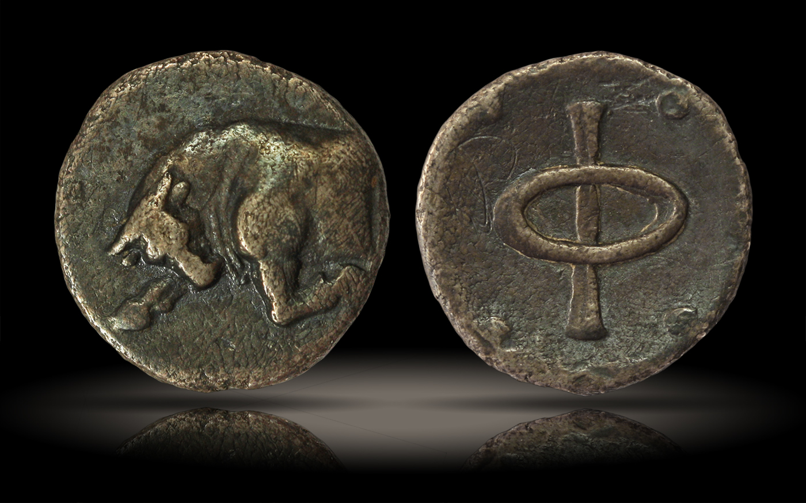

It is volume 9 ( 0 1 2 3 4 5 6 7 8) this is a draft part, it may seem that I stumble around some random rhymes, but that's how I always was working and some cool stuff came out of it, so the most solid info is the first half of the first volume, all the rest is raw as odb loved it or more. several cool notes appeared afterwards, so I keep it online just in case and because ever wanted to read drafts of scientists.
Let's list the main points of this work so far:
alphabetic order has some structures if lined out in planar tables
1. when it's cut into lines beginning with vowels.
2. when it's cut into lines which has vowels in centre of lines, and some vowelless lines are allwed if they are even only. But not all alphabets can be arranged like this, but some of them arrange into it nicely, so probably even less people knew about such arrangement.
3. reflection between the halves (or folds around some important letters)
4. reading of that first arrangement when the diagonal of reflection is lined from the top left corner into the right bottom one.
These four hypotheses are arranged by the rate of my belief in them. I'm pretty sure hypothesis number 1 is numero uno indeed, it's most probably a historic arrangement, I met few records of this structure, one from a modern-day amateur scientist, one from one english book, one from one indian book. I found that structure independently and it came frist or the second after the third. (hypothesis 2 came in the 3rd, and hypothesis 4 is the most recent one, it literally was born in the end of the previous volume)
Also transcription of ancient texts cannot be trusted 100% as all the science have reflected on itself and discovered a replication crises, of which I think I was aware of, because I knew I had to do it from scratch, but I was motivated by some linguistic forum to dig further in the past to be taken more seriously, so I followed that ruiling.
Christian claims that it's them invented all those writing systems are false.
Also some open threads to ancient egyptian, music theory, both iberias, chinese, native american, african and polynesian writing systems, some mystical and mythological references, leading to whole that culture to find relating pieces and gesture language can be a source of theorizings, and there are probably more, ogham of course.
These claims are up to you to find out how credible am I, I think I trust them pretty well.
(I lay out the argumentations for them in the previous volume. here my task is to go further, and I think a good and perspective source for research is the short words of some old european language such as latin in relation to modern european languages and how the same short pieces relate in them.
a = 1, to, well I didn't expect the reference to 1 2, but here it is. a is but in russian, which also follows a.
of об
в was v in russian and б was where ё is now?
de оf
до to
is есть - why does modal word has the to in russian?
am ем
are ести
are am is as AMS
Вы Я Он
В could be the b, the prehistorically first letter.
I as the centre between A & V.
N of он is the final letter of its' line, and could be lmn the xyz of the past?
also N is ν
VIN? ni = мы? я тоже последняя. V was the last and that's W of we.
VJN? and Он as the alphabetic sequence is
чем могут быть алфавитные слова как не следом более древней системы? и слово ёж предстало как базовым как еда, и представить, что люди начинали звероловство с поедания ежей можно представить очень даже: в еже мяса как раз на раз, другие звери их скорей всего не умели ловить а человек знал, что можно тупо камнем убить его. ежи кусаются, так что да, руками ловить погано. Возможно, мы делали себе одежду из шкурок ежа. Любопытно было бы посмотреть.
Но скорей всего эта дрянь колкая, так что наверное нет. Может на щит разве что прибивали как оружие, но тоже своих же поколишь некстати. так что наверное нет. еж еда и только.
A guy contacted me about his app and I thought that he will be more interested in some other research:
https://www.youtube.com/watch?v=Znx-odtXgw8 (Global Alphabet by Yuliana Gorokhov)
and though I first thought it was purely an artistic project, watching it now I see that she speaks of historical unity of all those alphabets. And it makes her work much more interesting, and she even removes the first stroke of Л the way it obviously is a swash when you compare cursive Л and l.
but then I watch further and I notice that she doesn't reconstruct the prehistoric unity, but turns it into truly an artistic project, which makes it less interesting for me, but the latin-arabic font is cool)
And when I searched for it, alphabet ted, I found an african professor speaking of ancient arabic writing systems, and here's a tidbit:

and there he recommends his book, which also contains many sources for research:
(I link it to a pirated version of his book, it also cannot into ctrlF, so it's a demo version, for all of you to see how beautiful is this book, of what perfect quality is its pictures. It seems old russian or european equipment was sent to africa and preserved there pretty well. Pirates do break some unjust laws, and I justify that because I give them free promotion, either way how am I less worthy than librusec where I found it. Sharing is caring. Pirating boosts sales because it promotes) I would mirror, but it's too big.
I selected this one image, because it can indicate how muslim missionaries also lied about their inventions, That time people knew of much more useful writing systems, why would they use african system a little, but not completely, why does it go labials first if modern scholars didn't know that? Why would it be named ki ka ku as if it has som other, the eastern order and only three vowels. And notice that signs with a i u go syllabricly with diacritic over the same sign, and other syllables are off this structure, completely arbitrary. So maybe that guy did invent it, adding his silly additional syllables to the ones used before him. to the original Ki Ka Ku. KKK is some psy-op, so it seems, it could hit africans with godly awe via these synapses, no wonder they were scared. It was a psy-op, a terrorizing.
綺麗な [kireina] is carino or carina in italian.
использование эпиграфов честно ли? Иногда читаешь эпиграф и книжку закрыл потому что и так слишком много понял. А еслидальше читать того же качества текст будет ли? У меня эпиграф строго информативный.
contiguous and contagious are similar not only by their orthography, but semantically too.
fear and affraid are connected via dutch vrees (verbal form is vrezen) or such form in old english.
I swear when I pray, does it mean I'm for sure.
(the question is are swear and sure are cognate? да, блядь!
is blядь is блять is быть? ля ы bl balaкать lalakatt. bla-bla-bla is ля-ля-ля. бl = ы because l = i and б is optional? (because in english do is duh, blatt. and english -ing swears or curses are translaterd into russian with -ed матs)
but ы is the opposite of я in this claster.
la is modified ы, ы is some abstract vowel, and probably that's how they sang before they learned to merge vowels with consonants into syllables.
ba bu bi is russian semantic name meme, so I lay it out in this oghamic order.
da du di could be да do ты or duh, du дей. opposite or not, я and ы are both of i-claster, unless у is y and я is а. are ы and я both y's and that's how it splits from where it splits into u and i (both can be a, because of bus and i's name's ai)
| is ו ا i
ו stands for и which is i, and and.
those knucklebones are also called astrogali and tallus. which can be related to tallysticks.
talli astrogali, probably a coincidence, or similar suffix.
https://www.academia.edu/24831681/Astragali (mirror)

Пуруша (др.-инд. पुरुष, puruṣa IAST, «человек, мужчина, дух») — согласно индуистской мифологии, существо, из тела которого была создана Вселенная.
В Ригведе жертвоприношению Пуруши посвящён отдельный гимн — Пуруша-сукта. Пуруша — Наслаждающийся — четырнадцатое из 1000 имён Вишну.
В индийской философии термин «пуруша» означает «божественный дух», макрокосм. В философии санкхьи пуруша — множественное неподвижное мужское (духовное) космическое начало, «чистое сознание», созерцающее динамичное женское начало — пракрити (материя). Пуруши являются вечными, их основные свойства — отсутствие свойств (ниргуна). Однако Пуруша, созерцающий пракрити, склонен ошибочно идентифицировать себя с ней и с гунами.
В первоначальном учении присутствовал тезис о множественности пуруш (пуруша-бахутвам), тогда как в позднейших трактатах провозглашался уже принцип единого пуруши, наделяемого качествами, близкими к атрибутам атмана Упанишад.
перекликается с
Берешит , Берешит , Bereshis , Берейшит , B'reshith , Beresh't , Берешит , или Bereishees ( בְּרֵאשִׁית - иврит для «в начале» первое слово в parashah ) является первой еженедельно часть Торы ( פָּרָשָׁה , parashah ) в ежегодном еврейском цикле чтения Торы . Параша состоит из Бытие 1: 1–6: 8 . Берешит (парашах) - https://ru.qaz.wiki/wiki/Bereshit_(parashah)
(но это не точно)
The word renown shows that k in known is a prefix. Probably, the same as in russian к which is to.
and then now is probably now and n is a suffix of the past or done as in done and gone.
ìÑø in simpler representation can give ê≤Ä as back and beak and A as legs and tail and wing and a as head and body.
here A regains its beak as if it simply rotated its head or maybe itself in the form of A and with swash it rotates its head to its right.
Swash of G makes g even closer to d (both meet again in g being russian d)
And it gives us ABᚦ EFG
and next H is a form of I, a double I, and swashed form of J shows that it's half a I, a י (is it why they thought hebrew didn't have vowels? Because I was shorter than theirs? Then such tendency existed? Arabs spoke their semitic language at least a millenium longer and they have ה which is vowel in half of hebrew examples is completely consonant in arabic ه also why o is in the e-line? is efg actually opq?
but abc structure demands all hijkl to be one claster. and it's easy because l ~ I and h ~ ג ~ λ ~
but positionally those letters don't correlate:
א ב ג ד ה
j i h g f
ξνμλκιθ
do I wanna say g ~ κι / f ~ θ / ν ~ N ~ И?
ה~ joy / ד ~ да ~ и / ב ~ va ~ go / א ~ f as we saw it in futhark?
Can I pull every owl to every globe?
covid is cow it
go it, избегай этого, cow ~ go (уходит, не дерётся) а бык бычит? бык be, остаётся, не уходит.
to and tu
to ~ you is the semantic origin of that prefix. to ~ твоё, тебе
me ~ ne ~ моё, мне.
to ~ take
no ~ don't touch.
take ~ touch
от ~ of
oт ~ oб
to / off
до ~ то ~ to
от / до
то и ты показывают как второе и третье лицо изначально не противопоставлялось?
and вы is as a form of we? вы is the way to speak to ours, ты is a rude way to address a foe.
(ты и те, а не вы и мы)
вы и мы are both labial and it is where the first and second person pronouns meet.
вы и ты подобны c которое и с b и с d.
c ~ sie (but also Вы (U) and She and They, and is it where W and Ш meet?)
(раньше я зачастую использовал ~ и / бестолково, как придётся, теперь я вижу, что следует писать так: ~ почти что =, / значит противопоставление (like 2 to 4 is a half, for example, but that's not only possible form of antonymity, grammars are more complex than math)
both grammar and math have ma in it's base, just as music has m
three m's
not only myth, but also grammath grammar is grandma, grany говорение
math is mother. and music is the younges, maiden because other positions are taken. lala
Music is muse? Three mothers are three grandmuses?
I think I came to this conclusion before in this work.
I as a newer, individualism pronoun. Ah! Ya! some междуметие видимо взято за него.
Междуметия до сих пор не особенно частями речи воспринимаются, потому что крикнуть можно такое, что и не запишешь, как lleju which I think sounds as ee-huh, but I didn't find any other transliteration of that cowboy whoopee. [yā-who]
I is ego, literally его. Ich is literally их.
here can be the explanation why high and low sounds are named so
οπρστ could be some Pythagorean line with
ο standing for the circle
π standing for the π of περίμετρος
ρ - I expected it to stand for radius, but google translate that word as ακτίνα
σ could be square or area, square of the square's area because square's square is the square of it's side.
τ could be τετράγωνο but then I see that it's square which is quadrat, not area. area is περιοχή, with π.
diameter is διάμετρος which is literally two metres, as if radius is a metre by default, as it is often so in trigonometry.
so I don't really know greek, it's time to visit that professor with whom I worked with greek before.
π standing for both περίμετρος and περιοχή and when diametre is 1 metre, perimetre of the square is literally π, and when radius equals 1, περιοχή is literally π. I wonder why it's radius in one case and diametre in the other. weird. will return to this weird stuff later. I mean what were the chances! even if it's p>0.05, this number is totally arbitrary, so why would I care, humanities are not hard science anyway. And I also probably calculate my p-value wrong. Here a guy explaining what it is and why it doesn't really matter as much as they want it to: https://www.youtube.com/watch?v=42QuXLucH3Q
{kind=link}
Minazuki (水無月, "Month of Water"). The 無 character, which normally means "absent" or "there is no", is ateji here, and is only used for the na sound. In this name the na is actually a possessive particle, so minazuki means "month of water", not "month without water", and this is in reference to the flooding of the rice fields, which require large quantities of water.[15]
無 standing for no is used as na (I would never know it, because it's always bu elsewhere, actually is's wu in chinese and mu in japanese, it is bu only when it's a prefix) and here m and n meet again.
(it's irrelevant that there's no historic records of european-japanese contact before the ones we know of, because m~n unity was even before l~r unity (because both l~r is the same sign in japanese) and we have no historic records of l~r unity either, but I think it's conserved in the language iteself (мы, но нас, us, nos, uns ~ wir, nós, we, мы) is this w~m unity testifying that we ~ no (no as in nos. this w~m~n unity is supported by v~ν and whether these words are related or not, the syllable is definitely the same, that ancient w~m~n nasality, and japanese show at their nose when they say watakushi (tachi is plural suffix)
how to avoid a military conflict? abolish military complex.
(countries without mic are annexed without much bloodshed if their politicians are not polite enough to go together and in their unique way, it takes some diplomacy to be a sovereign nation, military power is nothing but bullying. And don't we all have a duty to oppose the powers which be? we shouldn't, because ghandism work, shaming bullies is powerful enough. no need to risk total annihilation, and I hope actual missiles are all secretly dismantled, and people are just not told because it's not their business, maybe later, but biological weapon is reality again, we should isolate ourselves, to protect not only from traumas but also from other forms of life trying to take our place)
that -na of no could semantically originate this way: димино ~ не дима, но рядом
не вода, но –≤–æ–¥–Ω–∞—è
Is bouquet a bucket?
проверка: прёт ли трава что взял:
Шудры рабы своих тупых фантазий
каких фантазий? желаний
шудра чувств раб
лабиализаtion of the language happened
язык не подразумевает губ
шудра - старинное слово - соло (во это часть лабиализации? even n is lingual)
m came out of n then.
б & в are the same word "in" like ν
фантзия ис э нью уорд. рашшнс донт еуен хэу ф's.
язык even vowels are lingual in that word. language is also all lingual. but губы старт with г, but unlike
if Б & В are v, then they're also of ν
M is closest to N, thus does it mean it's the first of n's?
nop are ноп in russian. and that is some labial claster together with m actually.
mnop is it why m is here? historically? to show its specific role?
is it minor? both i and r are in direct proximity
minor as this mall small sequence, in comparison to the major ones from a to u or something?
M-inor
M-ajor
r is final? t is final, but t~s~r. isn't ß β? because if r~s, p~r, p~s, b~p
once again.. can I pull any owl onto any globe? I do need some help from ai, because it's all too big for my head.
Anyway, it's spring now. Time to build. Give up the weed.
] remember blaming Hawking for using word god in his book for over hundred times or something.
[ ctrlFed vol.1 for god and it's 43 times, in 2 it's 33 mit times, in 3 it's 56, and so on.
op q r s t
up que are set
up where are set
(it's some revelation,
abcd upset
bcd беседа
bcde посидим. be, see, deй
fghi fuck?
klmno ёклмп?
pqrstu просто ёпрст?
ё is io? those two initial vowels (I wanted to say labials, whether because vowels show how the lips look: whether it's no or yes.
yes is i, ー, 一,
no is | then? but which one?
ו as u, bu, fu?
ا as a-, un-?
ן as no, and thus n~l~ל as if ל is even longer lן then ו
v~ν as ו ~ ן it wants to go in reverse, whatever I hope you all know greek and hebrew alphabets by now.
וןל
then they're the snakes? the beasts: ìÉ≠
Are hieroglyphs Noah's arc? Ковчег также и ковчег завета.
–ö–∞–∂–¥–æ–π —Ç–≤–∞—Ä–∏ по –ø–∞—Ä–µ? ìɨìÉ≠
ìÉ≠ is now recognized rw instead of l as in old azbukaz, but also mꜣj as if it's мяу и raw. мясу мяу мур
but l and r are also recognized transcriptions:

here I finally smoked some good letter (in the same evening, same seance)
ìÉ≠ is the largest of the trinity of ìÉ≠ìÜì ìÜë or is snake the longest? Pitons could be longer than cats, piton could swallow a cat. and ìÜì looks more like ◊ú than ◊ü, and ◊ú reflects N as if LMN are all related, L mutated out of n in one direction, and M ‚Äî the other.
N is common? between B&T.
N as the central letter? M was named the
a b c d e f g h i j k l m | n o p q r s t u v w x y z
they're both the central letter.
lo pk kp lose and keep?
jq joke ir ire?
the first associations make perfectly antonymic sense so far. I wasn't even sure what ire was, I though happiness, but a smoke warm gum gun it was.
hs has? gt get? (get получает, добывает, goes it, go it, goed, good? goone? gone? didn't get yet)
fu fuck you? ev eve? makes sense. eve is l'eve? love? l'öve l'ёve, ёв ~ ёб
dw dow? do? dω? cx sex? cakes? kicks? сх, спих, спихнул, перепихнулась, спит пихается? странная парочка. спихни спи ~ fall sleep slip. sleep and slip is the pair of спи и спихни.
to kick ~ пихать.
kick пих
kicks kids. was it a common joke to kick eachother? To stay alert, to stay on watch. Но такой быдляк мешал задумчивым, и его в сущности запретили. законодательно как хулиганство.
leave it now, let's go on:
cy.. and I notice that I missed a letter, and that coud be the reason cx doesnt' reflect dw
a b c d e f g h i j k l m
z y x w v u t s r q p o n
m/n is the central letter, reflects only itself and thus odd undelimo? (неделимо поровноу)
oh I missed it right here that I used c before.
by be? d as do is very cool, but in this pair is az. if it's antonyms it's ends. (alpha & omega, nachalo i konets) jesus is Az? Az esm.
az by cx dw ev fu gt hs ir jq kp lo mn
as be sex do eves fuck get have ire joke keep low man
I think my associations are caused by my sexual restraint.
Thank god I don't have ass as teh first associations.
by could be buy,
cx cakes
dw dow daw dew down dawn dew is related to dawn?
ev is even or eve (pretty much the same0
fu fuck for sure
gt get (e is соединительная глассная (е & о) in russian) literally get and got. gut is gut gu got?
hs has he's hos house have home has house
I have home, he has house.
me have home, he has house his
me and he is the opposite then.
me and thee tho too
mi is three though. ksn? akasatana.. kana.. ka-na. n as the end. after n o starts, the voicelesss counterparts, and in that N resembles Z
here there but he and thee
he was the one who made us US, made me МЫ
Mы is the pluralf form of Me, just as We is the plural form of Wo, and thus Me = Wo? Men ~ Women?
Those are two forms of first personal pronoun: Me are how men said and We is how women said?
We is a coward's way to say Me, cow way, тёлок способ.
спасибо значит пособил. -el suffix is reflected with prefix с-? съел eaeten. if this hypothesis is valid, l ~ n, but.. ел ate, съел eæten. с = with, со- = co-, en ~ in? с и в, и союз.
с и в а о к ж у я н then if ж is here, so no, but 9 is better than 8. unless it's that octal numeral system.
op is об? о?
в к с represent all forms of consonants
and а и о у я tells that я must have been e, as if я = io = ю = ё = е
а я и о у (о около кого-то, у у кого-то, у = в, then. thus only к & с are the idependently monoliteral word in russian, and they both could be c because semantically к & c are similar, if к is not to, but at.
are those forms of c related to some of the vowels? like to ɔ
около is not far from at of к около окосо, приклонился, присоседился, прислонился is the word. сон and спасть, придавить,
а я и о у
я is place of её, another word made of vowels. ея is the very same word.
и о у = ибу?
I o V?
I хуй
V пизда?
о соединительная гласная оф ו or is it meaningless poetic wandering?
I'm p biased to see мф матершинные смыслы, потому что mater is the basics, основа и материя в моём сознании отчего-то синонимичны. matter mother основатель,
но понимаешь, что это недетская тема, и как только грамоте стали обучать с малых лет, все эти мифические смыслы стали неугодны, естественно, детям ебаться рано. прикинь ещё и детей детей воспитывать. пока ты ими правишь, ты им мешаешь размножаться, что безумие. не ты, люди. я бы одобрял, ободрял бы романы своих детей способные перерости в секас?
Why is it here? Is it the decline? I'm highe for some many lines and many good ideas, such as:
snake lion snail as LNV lion is l, not n. snake is s, thus samekh? snail is literally snl. I wander in open space now, it's not much to do with anything, too far too soon. Attempt after attempt, but not in a row, leave it to boil for some time to maybe extract
Any way, I go to https://drevlit.ru/egypt_dictionary_eng.html to see what is snake in egyptian, they pair hieroglyphs there, as mayans did. And I wonder if it's true, no, it's just their trick having not too much of a relation to reality, where 1,2,3 hieroglyphs went drawn in a line, but never by two:
I wonder how authentic these texts are, because why would hieroglyphs looked different ways. Here's another one unreliable the same way (I think I read something about boustrophedonism of some egyptian texts, but look how lazy my research is, I don't go to check it, I leave it raw as drafts may allow, so I think that the previous and the following couple are modern collages)

but the original text all looks the same direction:

I wonder what could be said on this panno. When I know ancient egyptian so I can read it, I will compare it to this superhit:
{kind=link}
I made this site a journal more than a book (my own magazine with blacksjack and hookers)
ìÖììÑø
M A
owl eagle
wife husband
is it how people saw those birds?
Just as kids think fox is wolf's wife.
did I tell of ìÑøìÖììÖ± as amш? or is it œâMŒ£?
I wrote about the first question in a notebook, not sure if I posted it here, I usually try not to double.
not to copy, but make some authentic but that ωMΣ is the new part, I wonder if it's true.
а её и
о у я
f follow e
ф follows у
if o is the beginning of the second half, and mn are the first letters, jkl are something newer. and when we spoke about fantasy being a newer word also because russians didn't have f's, then jfk is some meme. or it could be apophenia again. ai will sort it out. Or, hopefully me with my neocortex enhanced by some external additional ultra-neocortex be able to do it soon.
I keep on collecting pieces to this puzzle from some other places:


 (this one is here
for no reason)
(this one is here
for no reason)
Х said about А that he's a dark (or black) genius, and she wants a white one.
So is it good to cooperate with a black wizard? Blacks tend to lose, black is bad.
Black and bad are probably cognates, human (at least russian) mind sees black a s bad.
I believe all the world does, at least the best half of it. So let's turn into white light wizards
We're heavy, we work at nights, to fully concentrate, we wouldn't sing in daylight, rockers who gig at sunlight are faking the funk so to say, they suck, maybe manson went down because of being burned by the sun. burnt out at the sun. He would never play on day light if not the money. some diamond wizards buy everyone. Love can trump diamonds. Because hearts are higher than diamonds in card games. It came to me some long time ago, who knows how legit this spades, clubs, diamonds, hearts. Spade is the грубая сила. Clubs are police, conspirators, gosudarstvo. Diamonds are bourgeoisie. Hearts are love.
God is love. How did I arrange them, I don't konw. But looks more slick than shudra, kshatri, vayshna, brahman. shudras work with spades (in russian it's пики. т.е. орки-урки здесь живут, надо их перевоспитывать. Их пытаются загнобить, типа потому что они выёбистые, но на самом деле у них гиперкомпенсация (им постоянно нужно доказывать себе (но как будто другим) что они не лохи) и восстановление их самоуважения - более разумная задача исправительных органов, которая скорее всего практикуется в скандинавии (но это не точно)
spades as water? because of the form of the sign ♠? as if a drop of water at the same base ♣ has, which is naturally three (four) balls laying at eachother. as if stones would. So clubs are solid. Thus shudra are shit (жидкие, жидкий народец было более общим понятием, которое осталось лишь как самой презренной нации чуть ли не топоним. Язык изменяем, и открыв эти неполиткореектности в языке мы можем их исправить или научиться у них. А зачем нам древние понятия, мы начнём переписывать геномы и национальность станет ещё более размытым понятием: allegence to the flag, obedience to the state, a rudiment from apes or reasonable strategy? Clubs are strong not only because they can come winning with a club against a knife. Club is a great weapon, because it can cause less open bleeding, so it's easier to control if you want to beat a man or kill em. ими и им одно слово, и просто суффикс множественного числа, известный с незапамятных времён: ìè≠
Egyptian ìè≠ is ,, т.е. и т.д.
те и тתו (' is not י)
♥ ♦ ♣ ♠
are rich people because vayshya and diamonds. And here I see that card deck and varnas have different opinions on whether vaishya higher or lower than kshatriyas. both are shudras from the pov of brahman, only vaishyas are rich shudras and kshatreys are key shudras. R & K? Shudras are S pretty much qrs, pretty much all the linguals there are (t~s because ת without dot inside is read as th in thin)
Brahman is B, the labial. so is it k before r or after? q is before r, positionally yes, but chronologically r was before q, because q is not known to many alphabets, so first there were brahmans (shamans? shaman is shudra's brahkman? from the pov of the priests) and others were divided into rich and poor? no military among men, they're all military, and only later did good warriors unite against the others? How could it happen? When good fighter commited crime and peace in the city is not possible, the murderer would probably be expelled (execution is a paradox of murder for the murder: if murder is illegal why this one is? maybe that first murder was also justified not in less degree. Also good fighters saved lives, so it's also fair to forgive them for taking one? So expelled, and have to go the other city or to live in the woods, where he'd meet such good expelled warriors as them (did it became a law that they were to be killed not to let them be fighting for the city's enemies?) and gangs fought the cities and took control there and became the rulers, and the caste in itself. Kshatriyas are probably of this origin. So were rich people still higher than warriors? Rich people would hire warriors, to make them respectable. That's Europe. They can afford it. As a result, their economy is booming. boosted. (not doomed and busted) and poorfags of the east and south stand kshatriyas above vaishyas and as a result their countries don't know how to make money.
Brahmans of those countries should teach their societies to praise the rich, not higher-archers. The one who shoots further sits higher, because he is teh best for the best position.
Because brahman should rule with love, not fear. People should love success more than they fear death.
♥ ♦ ♣ ♠ is the normal european (and unicode) order, and on the East they could arrange them as
♥ ♣ ♦ ♠ because of their tops, not their bottoms, and two balls is great, three balls are only one ball at the top, and other sharps are rich (red) and poor (чернорабочий) разница лишь в том, что у vaishya пика и сверху и снизу, а шудра с ножом, но с голой жопой. Brahman naotborot изобрёл земледелие (лопата книзу, лопаты происходят от копий, копать и копьё однокоренный однозначно (пики are spades in english, see, learn from the Europe call пики ломами, а после на лопаты переделай, лопата от слова ломать? лопасть? to пасть, ложка лопата однокоренные тоже, лопать ломать ложкой (кусок торта например) ложит (роняет) и ложит (кладёт))
There are informational conspiracy against weed:
1. Sensemila, безсемянка, какого лешего тебе нужна трава без семян, если с семенами лучше: только трусы не нуждаются в семенах, чудесных, волшебных камушков, семена колдовские объекты. Гроверы нарассказывают кучу теорий как вещества пропадают, уходя на созревание семян, но практика показывает, что одна из лучших трав, которые я куривал была с хорошими зёрнами. Я трус, кстати, мне давали самые большие семена что я в жизни видел, я их проебал. Тупо проебал, может парочку друзьям подаривши, глупо, тупо, мудово. Русы трусы, в моём случае это точно. Мы слишком много думаем о самом худшем что может случиться, это у меня от бати, русские вайшьи же предприимчивы, они любят успех больше чем боятся неудачи. И как при слиянии шудры с вайшьей мог получиться брахман (искатель знания, а не чувственных удовольствий)
2. Vaporizer, also 9 letters (10 if sensemilla or sensemilja and vaporizers) whenever I smoked it, it only gave some body high, but no mind-high. And when my friend smoked the dark brown aftermath the next morning he got that mind-high of the top notch, thus all the substance was left in ther,
3. Hydroponic, thus it's 10 letters. as in Parliament and Funkadelic too, actually.is psychidelic also 10 because ps is one letter?
I smoked hydro after I smoked.. what? The best grower I know grows in soil saying that hydro is not his kind of thing. And I smoked something I knew was hydro and I thought that hydroponic is probably another element of this conspiracy, and this formal similarity indicates that it can quite be (I didnt know of this 10-letter thing before I began writing this text, it came to me as I typed.
Relaxe e viva meu nego Leve a vida que você quer
does it indicate the queer is he who wants, хочет, ищет, искать ~ ask,
and google translator reads it so weirdly: Relaxe sounds from portugese as helashi.
R isn't only looks like cursive h, it also sounds like that sometimes.
other words didn't raise questions (final r is not even heard, as h would be)
efgh
opqr
r is a form of h, it' clear now, and finally explains h's position better than I could before.
Learn phonetics of all european (and other) languages, this I can do, it's more achievable than learning them all. Lexics doesn't matter, and in the end I will find the international set of necessary toki pona.
Relájate y vive mi negro, toma la vida que quieras
in spanish R is R, but what's surprising v sounds as b
Labials are labials nobody guarantees anything else about them.
Beba Veva sounds exactly the same in spanish? If google doesn't fool me, I think why would they.
Just as B sounds as V in russian, so V sounds as B in spanish. Is it the letter we should use instead of б? but б reflects д and Б reflects Д in a way, so why would we miss it, especially since B is Б in english, so why would we differ? and if use V, use it as V, so transfer to latin where you can? ц = ts, ч = ch, ш = sh, щ = sch. Take brittish orthography and they will love us for them. It's a source of love that will cost us rien. Nothing, rien, not rein. not reign, though people will read foreign press more. We'll be as european as poland. Russians will become more european than Vietnamese when they accept the superiority of latin script.
啊 is so dense it merges into black rectangles in some fonts.
I think I negleted armenian alphabet for too long. But it contains ancient letters too, and the way it was mutated-mutilated may tell that it is very ancient and very great:
ԱԲԳԴԵԶԷԸԹԺԻԼԽԾԿՀՁՂՃՄՅՆՇՈՉՊՋՌՍՎՏՐՑՒՓՔՕՖ՗՘ՙ՚՛՜՝՞՟
ՠաբգդեզէըթժիլխծկհձղճմյնշոչպջռսվտրցւփքօֆևֈ։֊
What made me look at it was that ՠ I knew nothing about. It is just some перевёрнутая ա
Ա is named aib, as if it unites a & b. as if a is ا and b is U
its minuscule form ա if it's aib could draw it as i & u united in one aib
Ӏӏ is how some "russian" letter looks as if l is minuscule I, ctrlc+ctrlv those first two into google.
And it is russian only because of moscovite imperian polities, it is only used in some lanuages of Caucasus: In the alphabets of Abaza, Adyghe, Avar, Dargwa, Ingush, Lak, Lezgian, and Tabassaran, it is a modifier letter which signals the preceding consonant as an ejective or aspirated consonant;[1] this letter has no phonetic value on its own. An exception is the Abkhaz language, which does not use the palochka for rendering aspiration, but instead uses the schwa (ә) as a modifier letter for labialization.
In Adyghe, the palochka is also a glottal stop / ʔ/.
Example from Kabardian Adyghe dialect: –µ–ª—ä—ç”è—É–∞—â [ja…¨aÀà ʔ ∑aÀê…ï], "he asked her for something"
In Avar: –∫”è–∞–ª—ä–∞–∑–µ [k ºaÀà…¨aze], "to speak"
In Chechen, the palochka makes a preceding voiceless stop or affricate ejective, but also represents the voiced pharyngeal fricative / ʕ/ when it does not follow a voiceless stop or affricate. As an exception, in the digraph ‚ü®—Ö”è‚ü©, it produces the voiceless pharyngeal fricative /ƒß/. Examples from Chechen: –π–æ”è [joÀê ʕ], "girl" and —Ö”è–æ—Ä–¥ [/ƒßoÀêrd/], "sea"
and who said these writing systems are inferior? I say: they're even further from aeiou-grace than russian, and I was taught they were made up by commies or right before them, they used to use arabis, and if they had their own national writing systems (they probably did: even africans and americans did)
And to discover those writing systems (out of earth or obscurity) is necessary, because we still don't know where the alphabetic structures were born and what stages it had is also very unclear to this day. I only speculate, but the furthest in the past I have looked was ogham, paleohispanic, cree. they are still hanging in air to this day. Ogham only a little resembles runes, but runes seem to be more complex way to write. Or is it ogham more abstracted, secret? Didn't it all come from hieroglyphs, because why would you go the other way or why would it be unrelated. I believe it all was born somewhere near yin-yang tai-chi. And from there it could sparkle fires of knowledge, of knowing good from bad, and oghamic ᚐ and ᚑ could be one way to look at it, ᛆ and ᚮ tells that b~a/l~o only l is before o and b
and B and L of ᚁ and ᚂ is how the same yin yang thing was reflected in consonants.
What is the third consonant differs: the modern transcription denotes ᚃ to be F (or W), but the name of the system is Beit-Luis-Nion. and Nion is ᚅ today. It's as if F(W) and S(ᚄ) was inserted in the middle of it later. f and ſ. as in false.
the opposite of t of true and j of joy the s of sorrow and f of fake and flawed and false and fallen and... fallen as an apple from a tree, beaten and will rot because of this.
F(W) being the third (if B is the first!) correlates to alphabetic F(ו) and tells that whether BLF are the consonants without vowels, and L is Г as λ is ג. Then S is alike to russian Ѕ and N is the M claster..
Or.. BLN is the order and it's MLN. and samekh maybe follows. and W is the ω
and it supports the idea that bcde is the order existing before abcd.
And the name beit-luis-nion tells that there was neither samekh nor "e", that bcd is all the order of the consonants. aiu or ao? whatever is vowel order, consonant syllabic order is bcd. and that chart went extended to pqrst, for example because sometimes there were more than three vowels. What do vowels have to do with it? Before bcd order it was ᛒᚦ (the thing making me tell that runes probably predate normal alphabets. this and the more rich culture over their use: not only the myth of their creation, but also binden runes, staveless runes, divinations, trees, etc. and also that semites are deceitful, even though it's not polite to say so, it (I honestly admit it) was a factor in the consideration of this thing.
aoi is blue and this is vowel order of ogham
akai is red and could stand for alphabetic order, or should I call the eastern canon syllabaric instead?
even devanagari can be seen as syllabary if we consider the vowelled consonants syllables no matter how unicode draws it (I don't know how it does it) because korean is alphabetic, but unicode definitely gives them in syllables, and they have as many of those as chinese do, and they look similar, which if I didn't know their histroy history, I would recognize it as a link between chinese writing system and the syllabaries of the region. Lets entertain this possibility, let's look at them all from this angle. I know I cannot trust european history, why would I trust teh eastern easian one.
ㄱㄲㄳㄴㄵㄶㄷㄸㄹㄺㄻㄼㄽㄾㄿㅀㅁㅂㅃㅄㅅㅆㅇㅈㅉ ㅊㅋㅌㅍㅎㅏㅐㅑㅒㅓㅔㅕㅖㅗ
ㅘㅙㅚㅛㅜㅝㅞㅟㅠㅡㅢㅣㅤㅥㅦㅧㅨㅩㅪㅫㅬㅭㅮㅯㅰㅱㅲㅳㅴㅵㅶㅷㅸㅹㅺㅻㅼㅽㅾㅿㆀㆁㆂㆃㆄㆅㆆㆇㆈㆉㆊㆋ ㆌㆍㆎ
are also represented as (some on the top are also ligaturic, especially the second line)
가각갂갃간갅갆갇갈갉갊갋갌갍갎갏감갑값갓갔강갖갗갘같갚갛개객갞갟갠갡갢갣갤갥갦갧갨갩갪갫갬갭갮갯갰갱갲갳갴갵갶갷갸갹갺갻갼갽갾갿걀걁 걂걃걄걅걆걇걈걉걊걋걌걍걎걏걐걑걒걓걔걕걖걗걘걙걚걛걜걝걞걟걠걡걢걣걤걥걦걧걨걩걪걫걬걭걮걯거걱걲걳건걵걶걷걸걹걺걻걼걽걾걿검겁겂것 겄겅겆겇겈겉겊겋게겍겎겏겐겑겒겓겔겕겖겗겘겙겚겛겜겝겞겟겠겡겢겣겤겥겦겧겨격겪겫견겭겮겯결겱겲겳겴겵겶겷겸겹겺겻겼경겾겿곀곁곂곃계곅 곆곇곈곉곊곋곌곍곎곏곐곑곒곓곔곕곖곗곘곙곚곛곜곝곞곟고곡곢곣곤곥곦곧골곩곪곫곬곭곮곯곰곱곲곳곴공곶곷곸곹곺곻과곽곾곿관괁괂괃괄괅괆괇 괈괉괊괋괌괍괎괏괐광괒괓괔괕괖괗괘괙괚괛괜괝괞괟괠괡괢괣괤괥괦괧괨괩괪괫괬괭괮괯괰괱괲괳괴괵괶괷괸괹괺괻괼괽괾괿굀굁굂굃굄굅굆굇굈굉 굊굋굌굍굎굏교굑굒굓굔굕굖굗굘굙굚굛굜굝굞굟굠굡굢굣굤굥굦굧굨굩굪굫구국굮굯군굱굲굳굴굵굶굷굸굹굺굻굼굽굾굿궀궁궂궃궄궅궆궇궈궉궊궋 권궍궎궏궐궑궒궓궔궕궖궗궘궙궚궛궜궝궞궟궠궡궢궣궤궥궦궧궨궩궪궫궬궭궮궯궰궱궲궳궴궵궶궷궸궹궺궻궼궽궾궿귀귁귂귃귄귅귆귇귈귉귊귋귌귍 귎귏귐귑귒귓귔귕귖귗귘귙귚귛규귝귞귟균귡귢귣귤귥귦귧귨귩귪귫귬귭귮귯귰귱귲귳귴귵귶귷그극귺귻근귽귾귿 and 21 such blocks (22 times) more (but chinese still have more of signs)
and to compare this verbosity to chinese hieroglyphics (by semantic and phonetic to probably find similar charts for the hypothetic ancient common set of words. If toki pona does well with a little over a hundred, so can they. I think japan alo has less than two hundred basic signs from which the rest of them is composed.)
So my guess is it all began as drawing, then those drawing were normalized, standartized, and then their elements were recognized separately and those elements later became letters. And ogham is a representation of some basic philosophic system, which later merged with those letters and seriously influenced them into arrangement according to their phonetic features, the very system I have shown you first.
the following is some Ideographic Annotation Top Marks
㆐㆑㆒㆓㆔㆕㆖㆗㆘㆙㆚㆛㆜㆝㆞㆟ㆠㆡㆢㆣㆤㆥㆦㆧㆨㆩㆪㆫㆬㆭㆮㆯㆰㆱㆲㆳㆴㆵㆶㆷㆸㆹㆺㆻㆼㆽㆾㆿ
this are just strokes:㇀㇁㇂㇃㇄㇅㇆㇇㇈㇉㇊㇋㇌㇍ ㇎㇏㇐㇑㇒㇓㇔㇕㇖㇗㇘㇙㇚㇛㇜㇝㇞㇟㇠㇡㇢㇣
㇣ is the third stroke in 㔔 (I didn't even know they had such. but is it truly chinese? not korean?)
this marks are recognized only by japanese and koreans: ㇰㇱㇲㇳㇴㇵㇶㇷㇸㇹㇺㇻㇼㇽㇾㇿ
(the wiki links only on their wikis)
I was playing with unicode sets, I found many new directions to research.
Z8_GND_5296 is found in 2013, the year I made this discovery public. And it's among the oldest and most distant known galaxies at approximately 13.1 billion light-years (4.0 Gpc) from Earth, which is important, because they say that Detailed measurements of the expansion rate of the universe place the Big Bang at around 13.8 billion years ago, which is thus considered the age of the universe.
so it's only a question of time until they reject that abrahamic misconception: some department clerks already invent props for their precious theory, but the smarter ones already question the previous props, all those dark things. The universe is infinite and indefinite. That is the only possibility by logico-philosophical reasons.
But they also say that the size of observable universe is 46.508 billion light years. I wonder what they mean and if it's true, but that could be why they dare to say that universe expanded faster than light.
and here's explanation, they already prepared to the further perfection of telescopy with this mental gymnastics: The word observable in this sense does not refer to the capability of modern technology to detect light or other information from an object, or whether there is anything to be detected. It refers to the physical limit created by the speed of light itself. Because no signals can travel faster than light, any object farther away from us than light could travel in the age of the universe (estimated as of 2015 around 13.799±0.021 billion years[4]) simply cannot be detected, as the signals could not have reached us yet. Sometimes astrophysicists distinguish between the visible universe, which includes only signals emitted since recombination (when hydrogen atoms were formed from protons and electrons and photons were emitted)—and the observable universe, which includes signals since the beginning of the cosmological expansion (the Big Bang in traditional physical cosmology, the end of the inflationary epoch in modern cosmology).
According to calculations, the current comoving distance—proper distance, which takes into account that the universe has expanded since the light was emitted—to particles from which the cosmic microwave background radiation (CMBR) was emitted, which represents the radius of the visible universe, is about 14.0 billion parsecs (about 45.7 billion light-years), while the comoving distance to the edge of the observable universe is about 14.3 billion parsecs (about 46.6 billion light-years),[11] about 2% larger. The radius of the observable universe is therefore estimated to be about 46.5 billion light-years[12][13] and its diameter about 28.5 gigaparsecs (93 billion light-years, or 8.8×1026 metres or 2.89×1027 feet), which equals 880 yottametres.[14] The total mass of ordinary matter in the universe can be calculated using the critical density and the diameter of the observable universe to be about 1.5 × 1053 kg.[15] In November 2018, astronomers reported that the extragalactic background light (EBL) amounted to 4 × 1084 photons.[16][17]
As the universe's expansion is accelerating, all currently observable objects will eventually appear to freeze in time, while emitting progressively redder and fainter light. For instance, objects with the current redshift z from 5 to 10 will remain observable for no more than 4–6 billion years. In addition, light emitted by objects currently situated beyond a certain comoving distance (currently about 19 billion parsecs) will never reach Earth.[18]
so that is not the universe observable today, but якобы принципиально наблюдаемая, при том что это гонево на гоневе и гоневом погоняет (предел наблюдения на теории большого взрыва ускоряющимся расширением погоняет)
and they are prudent, planted the seeds for further and infinite cope: The size of the whole universe is unknown, and it might be infinite in extent.[19] Some parts of the universe are too far away for the light emitted since the Big Bang to have had enough time to reach Earth or space-based instruments, and therefore lie outside the observable universe. In the future, light from distant galaxies will have had more time to travel, so additional regions will become observable.
Jews can be antisemites because their parents are jews. Imagine if their parents had a chance not to ever be jews, if they didn't contact their local mestechko to be recognized, they would ever live like goyim and thus wouldn't be a subject to future holocoasts. And nepotism is not the best way to advance in life. And, as Korwin said, jews are smart people, they recognized that both nepotism is reprihensible and holocoast is inevitable in one way or another. I demand it to be in the form of genetic therapy and cultural universalism (everybody can contain all the cultures. Whole human culture can be written on one flash-card or manybe even on a dvd if.. no, it cannot, movies take one dvd each, so not even one flash card can contain them all. Human emotions are writen not in such a quality as the dvd, we remember it in less quality of the grain, but we remember it probably in analogous way, or is (not does) deeper cross-connection of memories considered part of human culture?
And conflict with the parents, which sometimes occurs,
And conflicts with the parents, which sometimes occur,
what is s in english grammar? this letter can run by the sentence, and artist drawing the text can draw those lizards too, and thus `'s like י would appear and matres lectionis too. or is it a rational invention, those matres lectionis. Why would hebrew term have latin name?
Matres lectionis (from Latin "mothers of reading", singular form: mater lectionis, from Hebrew: ◊ê÷µ◊ù ◊ß÷∞◊®÷¥◊ô◊ê÷∏◊î‚Äé æem kəri æa) are consonants that are used to indicate a vowel, primarily in the writing down of Semitic languages such as Arabic, Hebrew and Syriac. The letters that do this in Hebrew are aleph ◊ê‚Äé, he ◊î‚Äé, waw ◊ï‚Äé and yod ◊ô‚Äé, and in Arabic, the matres lectionis (though they are much less often referred to thus) are æalif ÿß‚Äé, wƒÅw Ÿà‚Äé and yƒÅ æ Ÿä‚Äé. The 'yod and waw in particular are more often vowels than they are consonants.
The original value of the matres lectionis corresponds closely to what is called in modern linguistics glides or semivowels.[1]
(this last line is to promote the misconception of consonant languages)
Ма́трес лекцио́нис или «ма́тери чте́ния»[1][2] (лат. matres lectionis из ивр. ‏אִמֺּות הַקְּרִיאָה‏‎; ед. ч. mater lectionis) — в консонантном письме согласные буквы, используемые для обозначения долгих гласных звуков.
Из-за отсутствия гласных букв однозначное прочтение текста в консонантной системе письма зачастую бывает затруднено. Поэтому для обозначения гласных (преимущественно долгих) используются согласные буквы, обозначающие звуки со сходной артикуляцией: [w], [j], [h], [ ʔ]. В иврите в этой роли используются следующие согласные: <◊ê> алеф, <◊î> —Ö–µ, <◊ï> вав и <י> йуд.
Один из вариантов появления матрес лекционис, зафиксированный в иврите — стяжение дифтонгов [aw]→[oː] и [ay]→[eː], например в словах בית «дом» [bayt]→[bet], יום «день» [yawm]→[yom]. Затем буквы вав и йод, употребляемые в этих словах для обозначения согласного звука исчезнувшего дифтонга, были переосмыслены как обозначающие гласный звук, появившийся на его месте. После этого написание матрес лекционис распространилось на обозначение даже тех гласных, на месте которых никогда не было дифтонгов. Более того, при появлении систем огласовки матрес лекционис не исчезли из письма, а стали использоваться для обозначения гласных совместно с диакритическими знаками.
Матрес лекционис встречаются уже в угаритской, моавитской и финикийской письменностях, но широко применяются лишь в еврейском, арамейском, сирийском и арабском письме.
Позднее, в мандейском, авестийском и других алфавитах, а также в некоторых современных разновидностях арабского письма (напр., алфавиты для курдского и новоуйгурского языков) и еврейского письма (алфавит для языка идиш) матрес лекционис регулярно обозначают все гласные, фактически превращаясь в гласные буквы.
Гласные буквы греческого и латинского письма, а также кириллицы исторически восходят к матрес лекционис: например, буква I –ø—Ä–æ–∏–∑–æ—à–ª–∞ из —Å–æ–≥–ª–∞—Å–Ω–æ–π буквы, –æ–±–æ–∑–Ω–∞—á–∞–≤—à–µ–π звук [j], U ‚Äî из [w], А ‚Äî из [ ʔ], Е ‚Äî из [h], О ‚Äî из [ ʕ].
אֵם קְרִיאָה or אִמֺּות הַקְּרִיאָה‏‎?
אֵם קְרִיאָה is "if reading" in both yiddish and hebrew. I can see how nations written with low letter can be offensive to those who consider themselves part of the nation: they got used to writing their nation with a capital letter (in english, but not in russian, russian nationalism is deminished by oppressive ruling and orthography is also in the governance of the ruling class. Even though it's not class, but caste, occupation, they have chosen it themselves or by nepotic links have grown into the system so it's both occupation and upbringing. They upbring us all in their schools. And that is a an another argument to teach your kids yourself.
אֵם is both if and mother, so such a naming into some latin text, I guess.
Both אֵם or אִמָא are mother in hebrew (but not in yiddish, even though yiddish is different from dutch by that additional hebrew lexics from the bible. Are ashkenazi natie of dutch christians digging deep and going oldschool?
A great argument against future holocausts: why burn dutch people who were jewed into being jews? If someone can be psy-opped into any nation, they can be psy-pped out of it ad into some other one, if that other one is developed enough, and maybe if not you can convince those подопытных that в царстве слепых одноглазый король and they plunge into some inferior culture, not noticing that they may adopt some inferior features from those people. Индуцированный психоз, например, как в случае с верующими. And spaniards should take care of their own sephards. And so on. Palestine will be better of being israel. And I capitalized Palestine only to denote the beginning of the sentence, and now to show capitalized how. I'd rather visit Israel than palestine. That's to sort it out. Islam is a worse form of judaism, more open form of it actually. semites are semites, and those ashkenazi and sephards are they considered to be goyim by some palestinian jews? Many of those jews are historically came out of Europe themselves. Now that thing, Europe. Do I respect Europe. I worry about Europe, they used to be the best place on earth, now I would be better of in the woods or mountains. I must believe technology will change the world faster than religion will get there. Make changes so large, that no religion can ever compete (promises of immortal happiness cannot compete with technology guaranteeing such comfort for real)
Teach the jews that honesty gives honours, гонор это цыганский уровень чести, честности, открытости, бесстрашия, уверенности в собственной правоте, цельность мира, научи их белому.
Когда тебе не нужно хитрить, потому что у тебя и так всё есть или у друзей найдёшь, поделятся.
социум оседлых сообществ гораздо могущественней кочевых понятий бродячих собак:
для челвечества это информационный век, а до него был атомный, а для человека как единицы его глиняный век только недавно стал веком бетонным, и оставался бы глиняным, или даже пещерным, как в каменном, если бы человек был как животное один. Организация превратила людей в человечество тел овечеством? лучше слова не нашёл? отечество телотечество челотечеством отцы овцы почему эти слова так похожи? почему в иврите аба, почти как овца орёт, я не знаю, я задаю больше вопросов чем ответов даю, но вопрос и предшествует ответу.
и ответы я тоже даю (другое дело что все они содержат в себе невысказанный безмолвный вопрос is it true?)
This weird image cannot be found by neither yandex nor google, I think I have to contact that А. Куприятнов, but www.kuprphoto.ru doesn't work and web.archive.org tells he's Александр Куприянов and I find his email and phone number, I will use email to ask about where was this image made to learn more about this wonderful abecedary: if Т instead of Ӏ were a typo, they would fix it some long time ago, but it has some very deep and serious meaning: It is the final letter of that abecedary, and АӀ is not using Ӏ(І) as a ten, but as a stroke (only not above, but along it) Т is for Ten and for Тцать,
the difference between Ӏ and І is most probably caused by he mess in russian unicode, and not that they were actually in any way differet in the language. they are now.
一丁丂七丄丅丆万丈三上下丌不与丏丐丑丒专且丕世丗丘丙业丛东丝丞丟丠両丢丣两严並 丧丨丩个丫丬中丮丯丰丱串丳临丵丶丷丸丹为主丼丽举丿乀乁 乂乃乄久乆乇么义乊之乌乍乎乏乐乑乒乓乔乕乖乗乘乙乚乛乜九乞也习乡乢乣乤乥书乧乨乩乪乫乬乭乮乯买乱乲乳乴乵乶乷乸乹乺乻乼乽乾乿亀亁亂亃 亄亅了亇予争亊事二亍于亏亐云互亓五井亖亗亘亙亚些亜亝亞亟亠亡亢亣交亥亦产亨亩亪享京亭亮亯亰亱亲亳亴亵亶亷亸亹人亻亼亽亾亿什仁仂仃仄仅 仆仇仈仉今介仌仍从仏仐仑仒仓仔仕他仗付仙仚仛仜仝仞仟仠仡仢代令以仦仧仨仩仪仫们仭仮仯仰仱仲仳仴仵件价仸仹仺任仼份仾仿伀企伂伃伄伅伆伇 伈伉伊伋伌伍伎伏伐休伒伓伔伕伖众优伙会伛伜伝伞伟传伡伢伣伤伥伦伧伨伩伪伫伬伭伮伯估伱伲伳伴伵伶伷伸伹伺伻似伽伾伿佀佁佂佃佄佅但佇佈佉 佊佋佌位低住佐佑佒体佔何佖佗佘余佚佛作佝佞佟你佡佢佣佤佥佦佧佨佩佪佫佬佭佮佯佰佱佲佳佴併佶佷佸佹佺佻佼佽佾使侀侁侂侃侄侅來侇侈侉侊例 侌侍侎侏侐侑侒侓侔侕侖侗侘侙侚供侜依侞侟侠価侢侣侤侥侦侧侨侩侪侫侬侭侮侯侰侱侲侳侴侵侶侷侸侹侺侻侼侽侾便俀俁係促俄俅俆俇俈俉俊俋俌俍 俎俏俐俑俒俓俔俕俖俗俘俙俚俛俜保俞俟俠信俢俣俤俥俦俧俨俩俪俫俬俭修俯俰俱俲俳俴俵俶俷俸俹俺俻俼俽俾俿
и таких в той части юникода 41 штука. about
did you know 亖 is a legit hieroglyph for four? I love these unicode tables already. Just in case, once again, unicode. unique code.
I wonder why I cannot find neither ten, nor four in here, I was looking for ten, wanting to show how much that T of that clock looks like it. In yiddish ten is tsen, which is natural, they're related. in hebrew it's asher or something, faggots don't even transliterate hebrew in google.
十 is the T ten, it was in the third of those
Those clock also have Ѳ looking like Ф and look at how Д reflects Б (which is not on the clock though, because Б is some later addition. And how Д reflects А on some other level.
Those clock (in comparison to the abc structure, tells that probably that Ѕ is actually ϛ which is reported to be labial, something like Ϝϝ as if ſ ~ f
https://en.wikipedia.org/wiki/Abecedarium tells:
The alphabet used for monumental inscriptions was very different from the cursive. The uncial, occurring very rarely on sculptured monuments, and reserved for writing, did not appear until the 4th century. The majority of objects bearing the abecedaria are not of Christian origin, with the exception of two vases found at Carthage. These objects included tablets used by stone-cutters' apprentices while learning their trade. Stones have also been found in the catacombs, bearing the symbols A, B, C, etc. These are arranged, sometimes, in combinations which have puzzled scholars. One such stone, found in the cemetery of St. Alexander, in the Via Nomentana, is inscribed as follows:
AXBVCTESDR . . . . . .BCCEECHI
EQGPH. . . .M MNOPQ
RSTVXYZ
This can be compared with a denarius of L. Cassius Caecinianus, which has the following inscription:
AX, BV, CT, DS, ER, FQ, GP, HO, IN, LM
Jerome explained this similarity. Children were made to learn the alphabet in pairs of letters, joining the first letter of the alphabet with the last letter (AX), the second letter with the second to last (BV), and so on. A stone found at Rome in 1877, and dating from the 6th or 7th century, seems to have been used in a school, as a model for learning the alphabet, and points to the continuance of old methods of teaching.
AX, BV, CT, DS, ER, FQ, GP, HO, IN, LM sets the sequence of ABCDEFGHILMNOPQRSTVX, and if T is I, then TVX is a quite alphabetic IVX. But what HILMN then? some insertion? was it AEO before?
is what I found about AOE, and though it's probably read as ΑΘΕ as if for Ἀθηνᾶ, Ἀθήνη, Ἀσάνα but I suppose it something more magical: the oghamic order of 123 of AOE, where E is 3. whether because Θ is labial as Ѳ and thus Ο with a dot. and the lingual vowel Ε is a C with a dot? who knows, een though it doesn' look like that in this representation, it actually could be the third of ГFE, where Г is g is d is a and F is Ѳ is Θ is O.
And another example of that ΑΘΕ
With M the central letter between them.
And some other similar coin:
is it the sequence? does this sequence of EF following the ΑΘΕ and then the next in line would start with Φ? We'll I looked for Φ coin, and see what I found:


and some more coins with a bee to show that it finds coins even if they have Ф not in initial position:
this one is different.
and also this just in case, because it contains its own riddles:
This is definitely of some other period, with much finer sculpture and more straight text.
and a couple of something resembling letters can be seen at its obverse (avers in russian)
ob = об = о = a (de, thus d~b again)
and some more mysterious coins:

But these could be more tokens than coins, the private money: whether half a horse (it would then take two coins to buy a horse) or an axe if the mint is of a forge. Is it where the word forgery comes?
Because look at these:

as if they were half a donkey or a jar or wine and chicken or a pie.
And mysterious letters on coins are used and in much later periods:


Sometimes with some obviouse meanings:
Sometimes with not so much:
But that masonic M is actually moscovite, Λ would mean Saint-Petersburg.
and Е. М. at the one before was Ekaterinburg Money (екатеринбургская монета)
íÄ≠ used to be BioViva's logo. It is a hieroglyph for god and it's said they called it an. which is next to the al. and Am is aum, om, он, on I want to go on. I want to live in a seclusion, because who knows what's on the outside. I want to go on. I am a ogon's fanboy? I want to keep my fire burning? I want to keep my soul alive.
Kijk is "look" in dutch. If jews were thieves, as russian феня often indicates, they would find offensive when people around that shout it.
around that around there, around them. they is the third person, and there is the farthest указательное местоимение.
Here relates to he, because when people are far, you cannot speak about some one of them, you don't see them separately sometimes. So far they are you don't see their faces.
I think I found why Composer lags: too many fonts. I used to have a block of unicode collection, I remove it, I will see if it lags after that. ..
Okay, it is indeed much better. No lags at all. So I should stay within few languages it seems. Or maybe even quantity of new letters also matter. I have a huge block of chinese hieroglyphs about and it works well without the block I left in the end of unicode.html.
Bees don't make hexagons, they make cilinders, the simplest form, cilinders of the same diametre naturally lay out into hexagonal pattern. because the wall is equally strained (not stretched, but the opposite, straightened could be because of stretch, but also because of stress, сжатие, а не растяжение, сжатие изнутри комнат. or did that wax actually strained, stretched into filling those hexagonal angles.
wax stretched. in the corners, which is very firm. The leads are sorta piramidal probably because it's how it stretches from both inside and outside where bees walk over it. But that's a theoretic speculation. I should have watched a video prior to these lines.
??? (forgot why) - here had to be the first example which made me think that p ~ st, but once I actually woke up it went away, and it still can be regained once ai compares all words with p to the same words with st instead of p. And ai part is needed to compare the synonymicity, the pairing can be in a prepairing part by a simple algorhythm with set freedoms (so it coulg change i to e, as in stick peg) and then we compare what phonetic pairs make the most of the words and we calculate the proportion of those pairs to the frequency of those letters in general vocabulary and then we place these relations along the normal distribution, and we see the anomalies, and those anomalies will be the real things, but for now let's entertain this idea by hand:
P~ST
Pater ~ St.Ater ~ С-т.Отец
ᛋᛏ~ᚢ
part start
stop pop
stay pay
steal peal
pink (pig) stink
stick peg
right: straight~право (as if gh is f, literally digamma, and then h is a form of g, both can be transliterated into russian with г)
f could be st because f~p? then st ~ gh, all four are gammas? abc (c & d are both gammas too them)
funk stunk? meh..
punk stunk! much better indeed.
found it! found the first example: page i stage.
Yesterday, compiling the second box of aeiou songs, I thought that I should try ΑΕΗΙΟΥΩ because that's the orderd Demetrius from Alexandria spoke about.
and the first find is magical: https://sci-hub.do/https://www.tandfonline.com/doi/abs/10.1080/00397672808590203?journalCode=sosl20# (mirror)
(that is literally the first actual spell I see since I began this work: We were told to translate a spellic at our grammar lessons at uni (like Tesla I attended it, but dropped in few years, I was better than that)
And now it actually spells, and I think I know how to spell those vowels: the way russiand would spell them: a e i o u, the way they are in bar pen pit rock pull, the universal way to recognize them, ei i ai ow ju are some local meme, which probably was force-memed because that vowel thing worked, so they had to make sure people didn't read them properly. Or maybe eiaou is the actual gammut. But as that gammut is reported to be descending,
I would suspect it to be even further that way: ieaou. I for 1 and V for 5.
And some of those greek vowels are the same: https://www.youtube.com/watch?v=rg5h-QMDnUI (mirror)
(if that reading is correct, with all those pletora of vowels they still don't have u (they probably get it by some dyphthong, even though it is not a dyphthong) which speaks towards the fact that u is the later vowel, that it was f before when f was w. but why does ע looks so much like У? but thus it also looks like y, and also لا but cursive ע looks almost exactly like ꙋ
when some other thread russians are not europeans appeared, my natural response was
We're american.
https://www.youtube.com/watch?v=Atoq7L9l-Mo (mirror)
https://www.youtube.com/watch?v=8RgRGWlDo70 (Norman Dodd - Tax exempt foundations - Manipulating politics and culture, Norman Dodd: Reece's Special Committee on Tax Exempt Foundations, Norman Dodd On Communist Conspiracy in the US(Tax Exempt Foundations)
and that plan to merge USA and USSR he mentions, made me to conceptualize a meeting tunnel, the return handshake, Project Alaska: when merging happens, we'll unite with alaska, especially the ingenious people living at the border will be happy: now they have to fly from kamchatka to vladivostok to fly to alaska from there and then to return to another side of the border to meet relatives from the neighbouring vilage. And the fact that Moscow will now be american city should not bother moscovites, because Tokyo didn't become worse once americans took control over Japan. Or who knows how traditional japanese thought about it (me personally I automatically wrote better instead of worse, maybe because I use better much more often than worse, or because my subconsciousness had its minority riport. report.
Either way, those "traditional" russians crave fro world domination, and as a part of the USA they will undobtedly become a part of that world power (they never were the whole of that power in the first play, and now like a fish swimming at the side of a whale is safe from being harmed by that whale.
I'm so antiestablishmen, I cannot say Доброго Пути, because of pootin' (I do want him to be kind. but do I have to beg him? to respect him? But that's a great slogan: Be kind. Resign.)
(so that weed I was questioning seems to be working: see what I did today in just few hours with the way I woke up with p~st thing until now)
I keep on looking into what search fro ΑΕΗΙΟΥΩ can bring, and it's only 5 pages of videos, but they're not of kids rhymery, but of pythagorean music.
I will bring them all here:
1. http://klyuchikrealnosti.liveforums.ru/viewtopic.php?id=106&p=5 (mirror)
and that link is so huge, it gave me other pieces: Abhisheka is a rather alphabetic word, and it does have a magical meaning. Which is not so wonderful, since I researched magic when I got more magic, but nevertheless, it's one of ours now. And it's wiki tells me that those idols are named murti, whether they are male or female.
2. downloading books on magic from libgen.rs I wonder if spell is the opposite of bless.
(I went downloading them looking for that oslo ostracon, you can do so yourself, I don't mirror them)
also is culture mispronounced conjure?
That oslo ostracon was directly mentioned in (New Texts from Ancient Cultures) Andrew T. Wilburn - Materia Magica_ The Archaeology of Magic in Roman Egypt, Cyprus, and Spain-University of Michigan Press (2013) and John G. Gager - Curse Tablets and Binding Spells from the Ancient World (1999) and after all those curse books I wanted to download something to outbalance that just in case, so I have downloaded about 36 books on blessings of all sorts.
3. okay, those 5 pages of links seem not too much to breathe through, but those are about 50 links, so I'd better slow down to surf through them more осмысленно. I will close this cound for now, I will return to this branch, that's later. 50 (actually only 21) only in videos, there are who knows how much more in general. I will stick to videos and images only in my quest this time. and there are not that many images, only some abraxis stuff. Which is weird and actually may indicate that ΑΕΗΙΟΥΩ is some local meme, and AEIOU is the universal formula. Discredited by being childish, but that's actually basic, deep, real, and all the mystic literature is mistaken by some inquisitioning will. but then I ignore abraxis (because I don't understand what it is, even though the word is alphabetic) and see at directly alphabetic artefacts:

That stone thing was also called gem, even though geologically it is not necessarily a gem, that could whether tell of any stone becoming a gem after it's polished, or that it was a good trick that even terracota miniature could be sold as a gem, and maybe that's the function of using the foreign word terracota instead of honest admitting that it's only clay.
and few more images from that hunt:
This image is told to be an
Amulet inscribed with signs and letters of magical power for overcoming the malice of enemies. (From Brit. Mus., Greek Papyrus, Nu. CXXIV.–4th or 5th century.) (Kenyon, Greek Papyri, p. 123).
and
But of all the names found upon Gnostic gems two, i.e., Khnoubis (or Khnoumis), and Abrasax (or Abraxas), are of the most frequent occurrence. The first is usually represented as a huge serpent having the head of a lion surrounded by seven or twelve rays.
Over the seven rays, one on the point of each, are the seven vowels of the Greek alphabet, which some suppose to refer to the seven heavens; and on the back of the amulet, on which the figure of Khnoumis occurs, is usually found the sign of the triple S and bar.
Khnoumis is, of course, a form of the ancient Egyptian god Khnemu, or “Fashioner” of man and beast, the god to whom many of the attributes of the Creator of the universe were ascribed.
yet I wonder if I wouldn't mistake Hnubis for Anubis. hm.. and isn't abraxas Osiris then? I know I go too far. have fun.
and the following image (also clickable) tells
Judging from certain Gnostic gems in the British Museum, Abrasax is to be identified with the polytheistic figure that stands in the upper part of the Metternich stele depicted on p. 153 and below.
This figure has two bodies, one being that of a man, and the other that of a bird; from these extend four wings, and from each of his knees projects a serpent.
He has two pairs of hands and arms; one pair is extended along the wings, each hand holding the symbols of “life,” “stability,” and “power,” and two knives and two serpents; the other pair is pendent, the right hand grasping the sign of life, and the other a sceptre.
His face is grotesque, and probably represents that of Bes, or the sun as an old man; on his head is a pylon-shaped object with figures of various animals, and above it a pair of horns which support eight knives and the figure of a god with raised hands and arms, which typifies “millions of years.”
The god stands upon an oval wherein are depicted figures of various “typhonic” animals, and from each side of his crown proceed several symbols of fire.
Whether in the Gnostic system Abraxas absorbed all the names and attributes of this god of many forms cannot be said with certainty.”
E.A. Wallis Budge, Egyptian Magic, London, 1901. P. 177-80.
and though I don't see no alphabetic sequence I would expect to see next to someone with such name, I think I should ignore the texts at the top and the bottom, and maybe try to make sense out of the middle procession. Isn't it Thoth processing the very first?
Having written and instead of in as a typo made me think. in is v in russian and v is and in hebrew. hm..
Rotations whether clockwise or counter-clockwise might originate in electrodynamic rules of left and right hands. I should know them by heart and mind, to speak about this subject further.
here, I just sent a letter to an ally. I will highlight what is important and what i want to speak further on.
Dear Happy (may I call you this instead of
Slaver and Vashe Slave)
I found a piece you may want to choose in
your work.
Two rather masonic
letters of Google and G-mail (gmail
literally used an apron for a logo in the past) Their
company is now named Alphabet, maybe because of all that
fuss I started on the internet some times before they
rebranded. Because I use their products, so they were second
to know. But of course it's синдром собственной важности)))
I think I saw such animation when elements
separated into lines to unite into something else. but I
don't remember where. And if they осмысленно эти логотипы
создали, то что они имели в виду? У М сначала пишут ноги, а
затем тот изгиб что идёт выше? У G тоже сначала написали
нижнюю часть, а затем верхнюю? Но нет, у цветов ведь порядок
есть: в радуге красный жёлтый зелёный синий, что
–æ—Ç–ª–∏—á–Ω–æ –ª–æ–∂–∏—Ç—Å—è на G и тогда М это ê§å and a leg to it. Я также перестал комплексовать по поводу
своей нестандартной манеры общения, какая ни есть она
естественное следствие затворничества: недостаток опыта
общения неизбежно выливается в неловкости. Но это дело
наживное, а может кому-то ещё и забавное. Тем кому не
забавно наверное и книжку читать не стоит, там я себя тоже
не сдерживаю, сам иногда удивляясь куда свободный поиск
способен завести (пренебрегая академическими правилами я
решил не только недостатки подобной позиции хапануть, но и
преимуществами по максимуму воспользоваться)
thank you and tot ziens.
> M это ê§å and a led grown dran drawn after starting with pussy we drew a line and then added another leg,
These masonic letter could be М & Ж (I think I spoke about this weird thing) does it say that in Google we fucke them with our questions, and in Gmail they fuck us getting access to our correspondance?
M for masculine, G as F? are both digammas? is G also ς Ϛϛ (and I didn't think of how much ς reminded it when I came here) and isn't it where my p ~ st grows from? because f~p. So all these are female letters, I guess. Labial male and lingual female? This doesn't make any sense. Gyne-cology, miso-ginia, genie? gals can make miracles. birth fro one, and they can do more. Ж is also on that line.
Now I'm overwhelmed. Does Lingual-Labial thing have gender semantics or is it strictly wishful thinkings?
Man, Father, Papa, Musculine, these words should have closed this hypothesis long ago.
But yin yang! But who's good and whose bad is arbitrary! Depends on for whom. Not always, but at first thought. at first sight. thought is sight? could be. So think is seeing? Could be.
4. I keep on digging on that ΑΕΗΙΟΥΩ thing and it definitely delivers:
here I mirror it just in case and I post some images from it in here:
but there's other was to see it:

(yet that way says "naive" in its filename)
and there they also explain why, it's also clickable, and here's a mirror
(and it gaves the same other image there, so this link is probably one of the sources of the previous one)
and some more:and there they also explain why, it's also clickable, and here's a mirror
(and it gaves the same other image there, so this link is probably one of the sources of the previous one)
and that somewhat familiar tetraktis can be found in bigger scale and two versions:

(you should know how to find sources yourself, I will return to these things later)
5. http://adonay-forum.com/diskoteka_magov_prekrasnaya_muzyika_dlya_prekrasnyih_dush/drevnegrecheskaya_muzyika_i_vospitanie_dushi_he_mousike_therapeia/msg/?PHPSESSID=b3a3bfe24a4765c89c12d8ad1e757c46;%msg_id%
(some text on ancient greek music, I haven't read it but mirror nevertheless)
they also had this funky image in the background, I found it and here it is just in case who knows.
{kind=link}
6. what am I doing here? cataloquing? anybody could do that. Just insert ΑΕΗΙΟΥΩ in the search bar, see that for yourself.
7. I stop my moaning and go on, this was to be 6th point, but hepta is seven:
(this images are clickable, and it's so interesting I had to mirror it for you)
stake is stick
Russian memes fuck russians up. Here's another one: Ломать не строить (it stands for "to break is not to build" (because it's much easier) but it would sound the same if it stood for "break, don't build")
Russia is crusher. Rooshitt is to crush in russian too.
Дружба это (совместное) тружение.
.also дружить с инструментом)
Служба это слежение.
Слежение это преследование, не последу, а пред ним. установка жучков и ловушек? шпионаж.
шпик от слова шпионаж not sci, but spy, sci сознаёт, spy подсыпает и подпевает.
Дух это и есть запах.
Моя капсула защищает от земли, огня и воздуха, сама при этом являясь водой. воплощением воды, вода со всех торон. чистый элемент (воздух в смеси. но вода же тоже в смеси: кислород растворён, все газы что в воздухе в ней в каких-то пропорциях растворены. надо чистую дистиллированную воду в вакууме стерилизованную.Тогда она жёстака голодна погазам (может ли такое быть, давление пациальное или ещё какое незнакомое мне слово, опыты покажут.
Смывая мы смываем дух, не только запах. наша воздушная фракция не пополняется же постоянно, а просто есть, летает вокруг нас на невидимых нитях ведущих к самым порам. но говёшка лежащая просто засыхает же. но если воду добавлять, она продолжит вонять же наверное. ккие железы у каках, никаких. вонь просто есть? вонь это когда в воздухе растворяется летучее вещество. И эти летучие вещества роем бус вокруг нас.
В моей капсуле мыться не придётся никогда. Мочу терпеть не придётся. И хотя новорождённые регулярно мочатся в свои околоплодные воды, я решил создать вывод каналии непосредственно для пениса. А значит нужно рубашку изобретать (наполненная жидкостью. но как сделать сгибы нетравмирующими. я думал и пришёл к выводу что только полная обнажёнка позволит не тереться о края рубахи будь он из силикона или ткани. Полная свобода. Оригинальная среда. Целостность организма может быть достигнута лишь при восстановлении плаценты (и это если внешние оболочки, выстилающие матку изнутри не являются тоже нашей тканью (я слышал лишь про один послед, и это плацента. Онавместе с оболочками выплывает? нет, я видел её всегда отдельно.
see images 11, 12 to see where mother's tissues come into play,
see images 21, 22 to see how placenta is like guts. So we can rebuild placentas out of the patiens' guts.
(I don't mirror this image because I don't know where I took it, and I mirror them only as some courtesy to my readers so they don't have to search for sources themselves. Some promotion to the publishers is even redundant, because any copying of their material makes reader find those very publishers more often, because reverse-search is a super him. hit . Hit переводится как попадание. (see hit and miss)
To take heat is to get hit?
Let's return to our placenta and let's ee it from the oher side:
Gush, I'm so much out of my depth.
The image in the centre (with orange, blue, green, purple quadrants) is the only one explicitly showing that the sack is from this side of placenta. And thus our body in its full form is a sack of our own and the placenta is also ours and is on the outside of it.
But the second image before it shows that mother cells cover us, so that sack could be of mother genes.
So I leave it here as an artistic gesture, for me to look into again and for you to get excited and inspired.
When I was younger, I thought that it's necessary to have a question before you smoke. Now I almost never do and answers come by themselves. As if my subconsciousness have been working since the last time and it knows better what to tell.
https://en.wikipedia.org/wiki/Orthographic_ligature#Chinese_ligatures
The Cǎonímǎ (草泥马) ligature combining the three constituent characters
A Chinese ligature for zhāocái jìnbǎo (招財進寶), a popular New Year's greeting
They pretty much illustrate how complex hieroglyphs can appear out of simple ones.
(notice how the "happy new year" thing goes right to left (as column traditionally go in chinese) and the final hieroglyph is at the top of it all using an element from the previous hieroglyph as a part of itself.
財 (wealth) is as if created out of the combination of 寶 (treasure) and 招 (trick)
進 is move on, advance, and thus 招財進寶 is trick money advance treasure.
jaw-цай чин-бао Zhāocái jìn bǎo (and such cool phrases is how we can learn the language)
Ꜩ, ꜩ are an european digraphy. Is it also how european letters appeared?
Is Ꜩ, ꜩ Ц, ц? ts? but they only have st and is it суть, and ц is це? its isit this is, this is it. the it. that.
these is a plural form of the. thees frist, these later. as metre is meter, but by this logic meter appeared before metre.
длать –¥–µ–ª–∞—Ç—å—å (да, от слова длань) работать значит от слова руки. но не с ребятами ли работют не с друзьями ли трудятся. Согласно одной картонке, друг и труд родственны, true is the word.
do droug friend buddy, I don't know english as good as I know russian. Let's see it in russian first and then explain it to europeans. Друг дорог. был бы я столь же уверен в английском? Like is friend and different cognates or related? the opposite of другой ис безразличен. друг как краткая форма другой перекликается с английским friend and different, so I say they are cognates in my theory (at least until some counterexample challenge this educated guess)
So not труд, but different. Can труд~друг constitute a counterexample to that friend~different theory? Different looks like it is dis-friend. but it is probably de friend. другой ~ true? not fake, not copying.
_..._
.:::: `.
:::::: : FIRST QUARTER
:::::: :
`::::: .'
`'::.-'
_..._
.' ::::.
: :::::: LAST QUARTER
: ::::::
`. :::::'
`-.::''
this picture makes me think D was the first letter, and A ~ D
and C was the final letter. final of four? if they're quarters? Were they quarters when they were three? Simpler humans only know three moons: растущая, полная, стареющая, как три fates, three moirae, three mothers, moon is mom. Sun is son. Or is it father? Did we know fathers when we were apes?
no moon (new moon) is definitely a quarter, but did people know that? did they measure or did they just see? did they just watch?
D O C is the order then. Or is it b o d or is it b c d?
c as целый or is it v for volle?
Why is it here? What does it teach us? I got a habit of thinking in writing, which makes many uncertain things in print. And though other (also academicians) publish bs, it doesn't excuse me when I can not to.
I don't know what's with me. I'm socialized today, I'm out of my track tonight. I will visit this site 2morn. is n row? or ning? morgen is both, but why so? gen can be anything? or almost anything?
{kind=link}
Before I go I may want to ponder on colours. This basal stoned state can actually help here.
I figured out that black is bad and white is good (it is racist, but europe is racist, every nation in the world is racist, it is natural, even those jews who pimp multiculti are natie towards their own state they finally acquired. I hope this fact will pacify them and send them into a reflection, they're naturally two-assed, but now they can be shown at this fact. I hope this alone cures them.
Yellow is gold, money. Brown is black (dark) yellow, bad gold, bad good, spoilt goods, rotten or recycled food.
Green is alive. (because plants show the difference more obviously in colour)
Red is important
I figured Black Green Red in BLM flag. but they align their flag as Red Black Green as if it tells Matter Black Lives. Warning, Black, Green (young, youth) So the flag tells Beware of Black Youth.
Warning! Black Youth. Y as in Yellow and желтый is almost зелёный. ЖЗ is how they go in the alphabet. Г and Blue should follow, neh? YG з in russian is where g is in latin. еёжз efgh, geel is yellos, yellow is жёлтый. y ~ g (way ~ weg) Red and Orange are E & F? E & Ё?
It doesn't seem to lean any where to lead any where.
Red is алый? If geel is dutch, let's keep on working in dutch: red is rood or blozend, orange is oranje. (marantz or oranjevy in yiddish)
red = important
orange = glad?
yellow = gold
green = alive, young
light blue = light? soft? (not very sad, good sad, noble melancholy)
blue = sad
violet = violent (bruises are violet) or фиолетово is indifferent in russian.
white is light
black is dark
brown is shit
grey is grave
this is some straight rainbow. square rainbow. with only four colours.
6+4 is 10, which is interesting (there used to beonly 6 musical notes, and there is only 6 colours in some flags. Blue is one colour in english. 4 and 6 are how lines in english alphabet go.
white as air? black as water? brown as gold? grey as green?
red is a new white? red blood is clean, white, light. Blue blood is considered to be dirty, black and blue are not too far. even in russian siny & cherny are not that far, siny is especially close to sery (blue to grey) and what I say here is language can demonstrate the evolution of understanding of colours. Some times blue were gray? Sky is both blue and grey. And black too. But isn't it never white? Never white.
Sun is white. And moon too. sol and lune, blanc, wiss, white ~ light. So both moon and sun are white, and sky is black and can only be light blue when the sun comes. Clouds are white. Clouds are definitely white. облако может быть и содержит те же бл, что в белом.
I'm meticulous because я мучу. Мучаю? no, мучу в значении готовлю, из муки например, не из мУки, а из мукИ. both are probably one word and means grinded. Pulverized!
A an anticommunist I am still have to admit
a as un- anomal, no = nor
So not only musical camut went descending, so did coulour.
violet is goddes do godly violence
Январь Февраль Март
Апрель Май June
Июль Август Cентябрь Октябрь Ноябрь Декабрь
What is wonderful about alphabet is that out of 12 names, 6 begin with vowels. In english J is not vowel now, so there it's only 3, which if out of 12 is more than normal. But J is vowel originally it's I.
Январь-Февраль is very alphabetic beginning of the year. And calendars used to be alphabetic. And alphabet have alphabetic structures I discover and March being the first letter, as if it commands Start.
Fevraly is of fever, лютый, и так славянские названия месяцев позволят этимологизировать европейские? Не знаю пока, посмотрим.
I highlighted with grey Names which break the structure, and though octabr, nojabr could be black, they could be an ostracon of some other (also alphabetic) structure: octo nuno deco, une du could tell that ᛒᚦ was how the abc began before a.
or is 0 Åå
And I know August and July is months named after emperors, but what they were named before? after then are month by numbers (as new elements in periodic table. and laphabet is a periodic table)
alphabet as a periodic table.
I thought of most years it's 365 days, and primitive childish decimal brain sees it as not dividing into ten, but well-dividing into 5.
365/5 = 73 and I look for it, and I notice that someboy noticed it: bodies are boys. buddies.
The number of days in 1/5 of a non-leap year.
and also this is how 73 may be represented:
it is one of so called star numbers.
the next is used for chinese checkers:
What if there was only 6 months? 366 is
Январь Февраль Март
Апрель Май June
If J is d í, then only March is out of the abc. Otherwise we have three months (out of six) beginning with labials (none of the second 6 do) and the other three can be attributed to vowels (three out of the other six are too) is J of june the first labial? Is I
Were we talking with lips to ours, to MINE and talking with voice to others?
мурлыканье и мяуканье?
Then I would be the closest to linguals we had, and J is a form of I. a short form of И, й.
ЯФМАМИ
ИАСОНД
(mother and son?)
JFMAMJ
JASOND
Among meaningless letters MAM & SON are one above the other.
Son is secondary. JFMAMJ Janus aFrodita(Freja) Mars Apollo Mercury Jah(Jupiter)
Freja is Venera, Venus. Mars is Mars. Mercury is Mercury, Jah is Son or Jupiter? Jupiter, Son is SON?
What is Apollo? and Janus? (Janus could be earth (because Jupiter is the furthest) Mercury is also the furthest and we can know that it's may's M the mercury, becaus mardi is of mars. marks are military borders.
Mars, Mercury, Moon. Why are so many celestial features have
creature created, real. credible.
feature fantasised, fanthom, fathomed, fairilike, fir fair на веку на веру?
JVМ..
venus and mars are the closest planets to us.
J must be Earth, which looks one side at a day and the other side at the night. So whoever invented calendar they knew how planets work, they probably understood earth as a ball and created language so that even god himself would like to use it, or so that they claimed he did invent it.
Jah=Nos? Я
Ve=Nos? В (F, лютый, furious, and venus the planet is ух!)
М=arse Is it where we used to begin? To count all planets and finish with course to venus after we conquer earth? Is it where the myth of martians start? how ancient is this heresy? or tradition?
JVM..A
April has to be Jupiter, because.. because it is what's coming next and the planet was observed in antiquity (they say, at least 7th or 8th century bc in babylonia)
Apollo is Apulu in etruscan and it was a personification of Sun and Apollo is considered to be the most Greek of all the gods.
so Mercury, and only after mercury jupiter. But why would they think Mercury to be further than the Sun? Or were there not 6 planets but only 5? 365 breaks into 5 better than into 6. pentatonic. befor orange: red yellow green blue violet. blue and red violet, I think we recognize this colour for some long time. And green between yellow and blue, as is also known since we know precisous transparent gems.
a clickable thing to research letter later:
RED YELLOW BLUE could be the primal three, the three mothers? три цвета, три материи?
красный полон огня, синий полон воды, жёлтый полон чего? Не был ли жёлтый белым? Воздух или Земля? Белый воздух, Жёлтый песок, земля. песок темнеет вбирая воду, значит земля могла казаться вобравшей столько воды, сколько песку в себя вобрать не под силу, только смешавшись с илом, с концентрированной водой мог он стать земле подобным. Смотри, устаревшая до нельзя наука, а и она чему-то научает: как делать землю, например.
RED YELLOW BLUE are the only pure colours, others come out of them: Orange is Red+Yellow, Green is Yellow+Blue, Violet is Blue+Red.
JVMAMJ
Jah+Nus (a не луна ли двуликой считалась? Луна смотрит то на право, то налево, но не, не сразу)
Ve+Nus
Mars
(SUN)
Mercury
Jupiter
Mars and Venus are almost at the same distance from us. And Venus is said to be even a little bit further.
And I start digging into how further is which, and I found that they give me the wrong numbers: they fed me with average numbers, by which... Mercury was closer to us than Venus.
(keep on reading, further I notice that "current distane" thing, see my rant and laugh)
On average.
Which means Venus is further from us than Mercury more ofthen than closer (and it can approach the closest of them all, and yet.. here's a clickable image explaining it all:
only it tells Indeed, when Earth and Venus are at their closest approach, their separation is roughly 0.28 AU—no other planet gets nearer to Earth. But then look at the previous screenshots: some of them are lying.
1 AU is 149,598,000 km (1.496e+8 km)
0.28 AU is 41,887,440 km.
Thus those screenshot disinforms again, they again give some average minimum or something.
If the months were attributed to planets.. as if moon appeared in some planet's house. I have to research it yet. Then there's a connection between days of week and months: mardi is of mars, lundi is of moon, so are these systems even correlate? Lundi Mardi Mercredi Jeudi Vendredi Samedi Dimanche
Mercredi is 100% after Mercury.
MMJ are like MarchMAyJune
Jeudi is probably Jupiter's. (or maybe of Jah? Sun? Apollo is a sun, Jah is too. isn't it? I dunno)
Vendredi is of Venus
Dimanche is some revamped to Sabbath or some other holy day, I think.
Why would the order of the weekdays be such? Mars after Moon?
I will return to this topic some other day. So far, I collected the astronomic gif:
☉ ☀
(I've tried to place earth and sun in scale, but that orbit of the moon has to be almost half of the sun. Earth itself wouldn't be even seen, be it is even smaller than the moon orbit. They say you can almost place 30 Earths between the Earth and the Moon (384400÷12742 as the distance to the moon and diametre of the Earth. I hope these numbers are correct, the more I work with letters the worse I become with the numbers, I think I need and extra-neocortext just for the digital things)
and another example to show that you should always test the information to know what you're given.
and if we look closer, we see that it's the current distance, so it's me who's fullish and ignorantly arrogant. Look at me and laugh, haha.
and the same link once again, only now venus and mercury are shown (if they had some moons)
☉ ☉ ☉ ☀
the distances should be 68.85, 108,72, 149,01, see for yourself if I'm good or not. I think... not so much.
Here, let's make the distances more in proportion, but now sun is way too big (or did I mess it up?)
☉ ☉ ☉ ☀
it is a simple task on proportions, and I suck at it as a schoolboy. I am worse, I don't do math regularly.
but back to the lanuage stuff.
I say it is some knot writing in the centre of it:
I suddenly know of whon company who used герб как оберег, герб и оберег из тех же согласных состаят. Что еврейское понимание языка нам говорит, это что глсн лшн. Согласные имеют гораздо большее значение,
thunder sounds.
hunter hides.
Think this thought and realize (this is a rhymic line. And this way rhymes don't bother the meaning lines and only украшает их как цветочками или зеркальным отражением, блестящим чем-то.
hunter hint похищает хищник
hunt & похищать, you see, гласные только с толку сбивают
hint is a налёт, но только в значении налёт иронии, как от слова нальёт, налито, тонким слоем (в отличие от наложено, положено, клали клади - вот такие, похожие суффиксы следует сравнивать)
делать делал
делайте делали
(второе и третье лицо они же настоящее и прошедшее время)
а ещё есть различение по числу делаю делаем и это первое лицо описывает будущее. Потому что суффикс с не меняет времени остальных, те примеры могли быть такими:
сделать сделал
сделайте сделали
сделаю.. и тут я вижу, что делать и делайте это не настоящее, а тоже будущее. и первое лицо тоже между настоящим и будущим. Я был, я бил - это универсальные формы прошедшего времени, не только третьего лица. Но в моей голове почему-то в прошедшем времени первыми лижали формы прощелшего времени. логично. я не в тот "ящик" заглянул
делает делаем (мы по прежнему стараемся сравнивать с максимально похожими фонетически. И здесь гласные очень большое значение имеют)
ты & мы противопоставляется здесь. Но на самом деле - он и мы.
(this grey text reminds palimpsest) Let's call this book palimpsest. No, let's not. It's not.
ты ~ он? вообще не близко.
делают те
делаем mы (me as a singular form of мы)
In prnouns english, russian and chinese uite. Let's not fight anymore. Let's share the globe and keep it clean. But that way removal of a government in one country will будет угрожать (will переводится как будет, рыба перевозится как фиш)
me we
мы wo
English of Chinese and Russian from English: not necessarily genetically, but in the form of language. How else do people borrow language if not genetically? Educated neighbours would influence educated nations to borrow their words: yes is understood in russian. So it can just come in passion And if it is morphologically modified (as джинсы, то это слово воспринимается родным и становится неотъемлемой частью языка. Джинсы наебнули совок. Продукт настолько в большей степени охуенный, чем то говно что в совек выпускали (мягкий растягивающийся хлопок, там и структура ткани наверное и сама нить значение емели.
wo we me (me could be a mispronounced we, the further itteration, maybe under the influence of people living in europe before chinese culture was brought to them with other miracles. and they understood wo as we and used we for their own.. я (me) is what we learn to be given something, and it is a согласие. and it sounds as yes. да ja? me we oui?
we ~ oui
я ~ ya
(and so pronouns tie between other three nations: english french russian german)
yes in chinese is 是的 shida (it's transliterated as shide, but it sounds a instead of e) thus second hieroglyph is literally да. 是 is the actual yes, and it is european si. And de could be used for russians to understand that word too. So shida went to be more powerful than shust just si.
But that 的 is translated as of, which makes it de indeed. The french de.
and if it is translated as -self,it is both french de and russian -ся
de is -с?
разденься de razden?
раздевать раздирать.
в вежливо
р рвать
So back to what I was saying before that: whites are the ones who strive for immortality (in my private case, and as indicates the birthrate drop and that only whites attend RAAD Fest. The only blackie I saw there was an employee of one company.
And it is a good and natural thing. The cutedge of tech is where retards are not welcome, and it could be correlated to Craig J Venter Institute
that very de is used for aim in chinese. because de that place arrow have to hit, and thus de is to in english, and because french de is of in englihs, of and to is the same thing? I think some
M is owl in egyptian (the owl you can often see in their texts is an alphabetic symbol of M, these tables are mostly correct (they differ in details) And M is also associated to see as mare, and water does reltat to mother, But a trick is all three matters are called mothers (that universal boncept of tridevi is probably much more abstract today, when we divided three times from three agregate states of matter, when we invented not to use the same concept to everything, because it can be misleading.
So M is not only for woman, which could be simpolizing it in many other ways (like the angle in the centre is the genital triangle, and üúÑ which is alchemic sign for water also has this shape. and M is similar to V and M is similar to N (we, me, nous, nos, нас, us, мы) and ŒΩ is greek N. - and probably other cultures had oher point of view on who is Mama (mama is daddy in georgian and deda s mama there)
about the talking drums: I think it's like some popular song, they know the words because they know the song. But it's only a guess,, they can have some better rhythmic ear for standard phrases. But that is what I first thought. Now I think it's some song they both know. Songs allow texts to be encoded in melodies.
You can literally see it. He recognizes some standard phrase, they probably have some better ear for rhythms. Brian Eno said that they don't dig tonal thing as much as we do (would he really dare to say something like this or is it just my addition) but in rhythms we cannot compete.
I think syllables bear much more sense than single letters:
Ma & Mи are separated as My & Me or Mom & Me, Mom is mine, but not exactly me.
Mамочка моя-моя? моя мочка? мочка значит мягкая? мягкую можно мять.
лёгкое может лечь? тяжёле лучше ставить, а не ложить? загадки..
What if fuck is an abbreviation of for god's sake?
Me is We'll is Will.
But mysly chto posle. What is after that me.
Mysle (Think, Thoughts) what if think is thing not realized yet. To realize is to implement into reality, to understand and to make should be divided by very short time so they are reality. Is it reality when it's in my head. Maybe yes, but also реализуй.. реализовать означает в русском не только создать, но и продать. создание здания? мироздание? здание строение, здание устройство, здание знание, сознание создание. здание делать знание знать. здание со дание. знание со нание? knowing? connecence consi.. consceio.. conscience? connect? cjn con struct, создать, структ строит фрукт фроить fruit i ~ к connaissance is a french word I was looking for, in english it's cognizance, осведомлённость, юридический термин, наверное поэтому так близок к романкому.
Fruit shows how i~к
hijkl is all one big IJ think. thing.
H-L (is it a lesson to give your ego away? I remember how my bad-trip pretty much ended when I said that there's no me.
Hl Mm Nn
Oo Pqr St
Uv Wy Xz
Aa Bb Cd
Ee Ff Gh
Hl Mm Nn
Oo Pqr St
Uv Wy Xz
Aa
Bb Cd Ee Ff Gh
Hl
Mm Nn Oo Pqr St
Uv
Wy Xz
It is in this structure, but not a very good structure. Or is it a man on a jet engine? Is t ome double cross? And Uv used to be the final letter. Especially since W&y are forms of Uv And I also had to change the order, of xy, which is technically cheating wheatever reason I had I didn't even give em.
Aa
Bb Cd Ee Ff Gh
Hl
Mm Nn Oo Pqr St
Uv
a man jumbing with a coattail of Uv?
T is the final letter of the hebrew. I think it could be reconstructed by some masonic scholars having access to some unknown books where the reasons for the alphabetic orders are given explicitly and who knows maybe simply prescriptively. Maybe they make it into reality not realizing what they're doing, automatically, merely speculations
א ב גד
ה ו ז
חטיכל מ נ ס
and doing the same Hl trick in hebrew I see how ridiculous it is.
ע פ צ ק ר ש ת
that י-line always messes it up. is it ego that spoils it all?
Is ego will as in I will or We'll.
‎When I combine letters like this, checking them on axial symmetry is meaningless.
Butה ו ז
חטיכל מ נ ס
and doing the same Hl trick in hebrew I see how ridiculous it is.
ע פ צ ק ר ש ת
that י-line always messes it up. is it ego that spoils it all?
Is ego will as in I will or We'll.
‎When I combine letters like this, checking them on axial symmetry is meaningless.
Aa Bb Cd
Ee Ff Gh
Hl Mm Nn
Oo Pqr St
Uv Wy Xz
Is rather wicked as an example of how far I'd rather go.
Because h is in Gh and H is in Hl
I didn't even notice.
Aa Bb Cd
Ee Ff Gg
Hl Mm Nn
Oo Pqr St
Uv Wy Xz
Аа Бв Гд
Ее Ёё Жз
Ил Мм Нн
Oo Пр Ст
Уу Фф Х
Х as a final letter would reflect phoenician script. But it's not nice of me to cut it so abruptly, but if
also something like џ used to be a final letter of some old russian. was it?

Why have I never watched at serbian alphabet before? Some orthography is so weird that it makes me think that those forms of Д & п & т may have had some origin in the past, before Vuk.
Here's what I'm talking about: Karadžić based his alphabet on the previous "Slavonic-Serbian" script
Here's the difference: Честь имамъ всѣмъ Высокопочитаемымъ Читателемъ обявити, да безъ сваке сумнѣ намѣренъ есамъ, ону достохвалну и цѣлому Сербскому Роду преполезну ИСТОРИЮ СЕРБСКУ, от коесамъ цѣло оглавленïе давно сообщïо, печатати. — old serbian, but also who knows how old it is and what was before it, wiki doesn't give a separate article to it. and here's the new version: Част имам свим Високопоштованим Читаоцима објавити, да без сваке сумње намерен јесам, ону доста хваљену и целоме Српском Роду прекорисну ИСТОРИЈУ СРПСКУ, од које сам цело поглавље давно саопштио, штампати. (I have the honour to announce to all Revered Readers that I am, without any doubt, intent on printing that praiseworthy and to all Serbian People valuable SERBIAN HISTORY, a whole chapter of which I have published long ago. )
S and T are united in Ottoman translated into russian as Osman.
and that relates to то~сё. but only if this~that.
But if so many personal pronouns sound as yes, why does french nous is more like noes?
Is it where the antonymity of the pronouns manifest?
I wonder why we can speak with undefined syllables both yes and no when yes is a double syllable uh-hu and no is much more single whether longer than ones used in that yes or if double, the first part is so much more stronger than the second one, that it could be single and the second syllable would be just a phonetic swash.
no as uno? duh as du?
but why are dogs taught the other way around?
is it because when A came to stand first B became second instead of being first. And though 2 is probably chronologically the first recognized letter, before 2 comes 1, and probably that's why Aa & Дд are so alike, because ᚦ was the 1 when ᛒ was recognized as 2, and that is probably why not a single numeric sequence (LMN, UVW, and even EFГ, don't go in a straight order. EFГ is the closest to it, but it's in reversed. Is it a key, that they all were that way: HIי... MNL then? WUV? or is LN IH and M is the third in that ӀНМ? H standing for И which is currently used for I and ӏ stading for i is another argument pro that HIJKL thing)
But to close the serbian question for awhile, let's look at other fonts of theirs to see that those anomalies are present only in cursive (which may be much more informative than the official font, because cursive is not that much regulated. So on the following table they forgot about cursive majuscule, but the minuscule anomal т & ш are shown:
I think I say these ш & т, but there also was something else, it was г п т but what was it..
Die Kleinbuchstaben Б, Д, Г, И, П, Т und Ш in russischer (links, blau), bulgarischer (mittig, rot) und serbischer Schrift (rechts, gelb), jeweils Normalschnitt und Kursive
It's interesting, that Ш ends their order and its cursive is similart to Т who also can.
I wonder if it matters that between И & T there are 11 letters and between П & Ш there are 10.
I wodner if it matters that between И & П there are 8 letters and between T & Ш there are 7.
There are 14 letters between Г & П, but he added so many new letters into that space, let's see it in russian: 12 between Г & П, only 2 between П & T, so I guess these numbers do not matter.
From the Old Slavic script Vuk retained these 24 letters:
А а Б б В в Г г Д д Е е Ж ж З з
И и К к Л л М м Н н О о П п Р р
С с Т т У у Ф ф Х х Ц ц Ч ч Ш ш
He added one Latin letter:
Ј ј
And 5 new ones:
Љ љ Њ њ Ћ ћ Ђ ђ Џ џ
He removed:
Ѥ ѥ (је) Ѣ, ѣ (јат) І ї (и) Ѵ ѵ (и) Оу оу (у) Ѡ ѡ (о) Ѧ ѧ (мали јус) Ѫ ѫ (велики јус) Ы ы (јери, тврдо и)
Ю ю (ју) Ѿ ѿ (от) Ѳ ѳ (т) Ѕ ѕ (дз) Щ щ (шт) Ѯ ѯ (кс) Ѱ ѱ (пс) Ъ ъ (тврди полуглас) Ь ь (меки полуглас) Я я (ја)
that information is from the link, to which the following image leads:
another table shows some other font, with cursive п, т, ш similar to russian forms, but it represents a wicked cursive form of Б, which once again contraposes Б & Д:

and their latin script may just show how the U line could be in the past:
Now I wonder if I really know how academia works. What if they rejected me a couple of times to make me keep on working on this problem until the theory is enormous or before I give up if I didn't really want it as it would be if I stole it, for example. Would I keep on digging, if they published me? I don't know. At first I just wanted to make it better, making it bigger happened naturally. I kept on trying until I flew the way I fly now. I'm high as a kite and nuts as some nasdat naxi.
So even though there's georgian anomaly of mama & deda, I consider it an anomaly. But baba as daddy, isn't it directly connected to that? Maybe, I look from the european perspective and I will look at it after I realize the sources and forms of pronoun antonymy.
I call M female letter, and J is male, and words like Man & Жена I consider as some derivatives of them, meaning the opposite sex by the posession suffix -n of own. as they use similar suffix in russian and in japanese for genetivus. and male is probably a cognate of man, and female is a derivateive of it just as woman (and both female & woman use labial prefixes, or maybe not directly cognates, but related, only -le suffix stand not for own, but for -like or something of the kind.
שלי is my (or mine) in hebrew.
שֶׁלְךָ is your (yours) in hebrew.
and I think I think I see a pattern here. And expecting to see some shalan for his I see that his is
שֶׁלוֹ
is his in hebrew his.
שֶׁלָהֶם is their
and שֶׁלָן was what returned
שֶׁלָהֶם is their
and שֶׁלָן was what returned
מייַן
And I realized that I need a table of hebreew pronouns for some reason.
But instead I find this:
(if you click it, it tells of pronouns there, I will post here too)
Look like water starts with M, I spoke about it before, and linked that Water Mater Вода Моет to M(מ) they speak about in sefer yetzirah. Там вначале огонь и вода вместе, как ша-маим огневода (мем огненной воды не оттуда же ли) противопоставленная твёрдой земле. Эрэц. Воздух по любому среди огневоды, среди проникаемых проницаемых (the same с) - I placed russian с instead of c. why? by accident. Эрэц последняя идёт. Шамаим первым идёт Ша огонь идёт первым. Может Алеф была огнём? Нет, огнём был Шин. Аш Вообще-то аш содержит и алеф и шин и начинается с алефа. Хорошо. Пусть аш будет א
Тогда маим остаётся Мемом, а эРэЦ это Р & Ц. R & Z. Г & Д, zar rex господин. г-н, г-д, господень, К & N, KinG, Qr Queen? K is king, Q is queen, C is caesar or царь, or count, G is graf например,
К столбец - это золото. Т.е. А это Агонь, В это Вода, Г это Глина, Д и того хуже, как и г.
E это из огня? еда. F это фрукт? Ж жевать З зевать? Ё это ёжик и ёлка. Царица чтоли привезла? У нас сосны может только были? да не, гонево же. но синие ели диковинка. Может там тайна в том, что чернила подливают для чудесности.
Если первая губная В, раз Вода, то во второй строке может Б и есть, тем более что в русском первая половина более отчётливо звонка.
Если Е еда, то Б уж не баланда ли, что это вообще за слово?
Булка, например, Бутерброд. двойная б, Bread & Bulka. Could ul be re, could ka be ad?
Брага может быть? Если Еда, то Питьё. П было здесь? Есть и Пить же следующим. Кто-то убрал все глухие из первой части русского алфавита, чтоб создать в нём структуру, которой в неё не было?
Есть и Пить, Жрать и дальше не скажу.
Искать? Копать? Рыть? Лить? Ловить? Мыть? Ныть?
Отнять Пряать Красть? Рыть Ссать толкан давить? нет слова что я искл на Т. defecate begins with d as I recognized, but I could recognize it wrong. But as a little child have humans been and in that state could they invent alphabet, and alphabet transformed them to taboo some things, so в следствии этого они вынуждены были табуировать си структуры порождённые старым мышлением.
И зачем я их обратно откапываю? Я уже спрашивал себя, справится ли человечество с примитивным пониманием языка? Но я, кстати, так и не доказал, что хулить и худой от хуя, а не наоборот или вообще параллельно.
Агонь Вода Земля
It seems russian alphabet (Гора, Грязь, Говно, Глина, ЧерноЗём. Земля с водой: М внутри.
Значит З а почему вообще З? Δ sounds as ð in greek. And russian alphabet is from greek.
I thiught in greek water is aqua, as if they placed water first. But to my surprise it's νερό
earth in greek is γη, and γ is the very third letter, following the.. β.
ν is not v in greek, it's n, it's Nero. что учитывая m~n очень похоже на море. but sea is θάλασσα and I'm pleased to notice that it supports the idea of labiability of the θ.
Учитывая, ч я черри-пикнул русский, натянув О на А, выбрал не ту букву какая шла сразу (из Глины бог слепил людей, не могло быть у бога говна, потому что всё что у бога драгоценно (здесь могли быть дикие истории из жизни верующих, но не будет сегодня)
Агонь Вода и Глина. Это русские сказки? Евреи и русские делят культуру? Русским алфавит достался, а евреям евангелие, еврейское нагелие. ангелие хотел я сказать, но наголее им присуще. сущее при них.
Агни огонь, а потому писать Агни считаю архиправильнч. И если в библии идёт.. а в библии так и ещё, Аш Maim aRex. Глина как арех раскрывается? Не было чтоли о? О это твойная а. долкая а, а-мега (чего бы выделяли букве о долгую форму раньше А? и H как двойное И, или Н ещё дальше по этой шкале высоких нот ушло чем просто I, dvoynoe E.
E EE=I (II=Y, II=H)
A AA=O OO=U (in greek Y is instead of U, and double O is Ω
so it is as if in the West A O U & E I Y and in the East it's A O Ω & E I H (but only H is placed before I. Directly before I, and in russian it goes ИЙ, long I (and historically H) before short I, J. just as it is in english latin IJ. J is short I when it's.. at least in some other european countrie' latin.
A O U
E I Y
A O Ω
E I H
Y
I wonder what Y is in greek then. I guess it's Ю. nasal I or palatalized, yotirovannoe O.
Я is probably one of these: ꙔꙖѤѦꙘѪꙚѨꙜѬ, probably Ꙗ
as if in greek Y unites all three features: vowel, labial and lingual at the same time. And that's naturally ju. jew? no, ю. thought jew probably also includes features of all three peoples: Wit of Whites, Jewfro from Blacks, and semites are neither Yafetim, nor Hamim, thus they're chinese themselves, the asian race. sem as in сина, псина? скажи мне что ты ешь и я скажу кто ты. п is probably pais. but then сина не (прошу извинить подобные заскоки, пусть будут чтобы видеть как бывает) jew in chinese 犹 and sounds as yo (йоw) and the same hieroglyph is used for these meanings: still, yet, even, nevertheless, even now, however, in spite of everything, notwithstanding, Jew, Jewish, as if, to scheme (so I guess chinese also know about cabals of cabbalists and their hutzpah which are stereotypes in europe.)
据 sounds more like jew, but it actually stands for according to, evidence, sickness of hand, certificate, on the grounds of, act in accordance with, seize, fortified
犹 reminds 我 and that stands for я which sounds very similarly: ya. and stands for I (me)
Ik (l) MiNe? mistransliterated ΜΝΣ which gave birth to the concept of samekh?
and they ecole~school etudant~student etude~study and so on - some body definitely got it wrong, and they have never changed it.
Another thing to think that jews are from china is that china in chinese is d íongwo, where the first syllable reminds jew a lot. gwo is country, so it could be some jewing country. But do I have loicense for such a speech? Why do I act like a retard? Because I shouldn't smoke mere than once per day.
Hooray, a new day. What will it bring us I still do not know. Let's see.
And I haven't end getting high and already hooked on some internet randomizers.
Here. Will leave the room only when I really need to. So let's talke about something we already know. Because we definitely don't know many of what we knida know for sure (but if we do't know them for sure, we'll have to go online to clarify, and there some randomizers live, they tend to lead us not where we intended to go, and worse than this, they fill us with some random information we have no idea if it's true or not.
School is also randomizer. School is enforced randomizer. Schools randomize our sphere of interest (it doesn't grow by the needs of our personal neural development, that program they read is rather random. They may interest you from time to time, but you immediately go to something else not allowed to go where you ask if they teach you anything at all (they wouldn't even give me physics or maths, if my father didn't teach me that.
I must tell my niece, when she sat on my knees that school is not a place for her. School is not a place for anybody.
Я хочу общаться в мире идей, мир людей мне не интересен. люди ло идеаль. not ideal.
Идея интересна, what if I remove those additional я, people would think I'm self-less.
интересная ~ интересна мне
итересует ~ интерс интеу н интерес у тебя
интересуешь ~ интерес у её (ж, she, sie - сие, the thee this - see, difference in how we understand pronouns influences all the grammar, and though it's a raw theory, I already understand it as something big, because I was cooking it for some looong time, so it's not cooking, it's some discovery, digging into something huge. global. all our culture is influenceb by it because it's in the basis, some of these ideas could come from feral apes or whatever we were before)
интересна интерес она?
интересен интерес он.
т.о. не она и он, а на и ен. Открытый слок соответственно женский, закрытый слог мужской.
на и ши, как это могло быть? и заметь, что язык в древних словах этих (если в такое древнее, то оно из н, both in & ν) and where did M come from? K? как не только кохатися, но и kussen, родственное английскому kiss. poessen is probably kissen not in kaf (kaf is mouth in hebrew alphabet, азбука. названия слов могут быть ключом к различию в алфаивтаъ, давай посмотрим:
иф каф ис мауth, then it's clear how M would come out of K, I thought of K because of
see what I found in egyptian: ìÑ≤ìÑ≥ìÑ¥ìѵìÑ∂ìÑ∑ìÑ∏
ìÑ≤ ìÑ≥ ìÑ¥ ìѵ ìÑ∂ ìÑ∑ ìÑ∏
e, p a,d g b c, г s R? (p+ or e+ E is one of the tightest letters, and P with some simpler stroke is R)
(I'm only guessing here and almost every where. Is it poetry or science? it's something new)
abcd
efgh
if d is a, then abc def (B opens into E and Г doubles into F)
ABC
DEF
GHI (G is g which is another form of д in russian)
It's as if cursive ד of ᚦ gave birth to both д and g because it could go both ways, to do or to go.
ד also looks like Г, because both could be axe, not door. So if I challenge hebrew names for letters, how can I know of Kfa being a mouth? Because of jewish word .. haha, mouth is pay, not kaf, kaf is hand. And to my surprise I notice that (and here something happened in my personal life that I completely lost interest to writing this stuff, I began weeping some offtopic instead, but that mess I cut it out)
> Если сформулировать главную теорию, которую вы выстроили, в одном предложении. Правильно ли было бы сказать так: наличие внутренней симметрии в алфавитах доказывает их непосредственную связь? Какие выводы позволяет сделать ваша теория?
Их непосредственная связь была очевидна и до меня, моя теория показывает, что официальная наука, говорящая что финикийский - первый алфавит, понятия не имеет о чём она говорит, что в алфавите есть уровни гораздо более глубокие, чем уровень который представлен в финикийском. Уровень четырёх элементов. О трёх элементах, ещё более глубоком уровне понимания мира, до концептуализации воздуха наверное, говорят и греческий миф о создании алфавита и еврейский миф в книге сефер йецира, но там не сказано что их кто-то изобретал, сказано лишь что они есть, так что евреи не являются создателями алфавита, надеюсь они меня за подобные предъявы не удавят, потому что они хотя бы сохранили этот слой в своей культуре, остальные вообще папуасы в этом отношении (причём сохранили в виде, более ясном, чем в греческом мифе, именно как три матери, и в более базовом даже чем греческий миф, где ◊ê уже —Ä–∞–∑–ª–æ–∂–µ–Ω–∞ по –≥–∞–º–º–µ AEIOU (–ø—Ä–µ–¥–ø–æ–ª–æ–∂–∏—Ç–µ–ª—å–Ω–æ, гласные родились из музыкальной грамоты, так что алфавит - это перекрещивание двух(!) элементов (женского и мужского, воды и огня) и гаммы, что означает что сначала алфавит был силлабарией, и лишь затем стал строго говоря алфавитом (что привлекает очень большое внимание к палеоиспанским системам письма) Мне интересно найти этот миф в египетском исполнении, но я пока не нашёл даже последовательности похожей на алфавитную (или на халахам, который они вроде использовали) но сейчас загуглил халакхам и нашёл https://lechaim.ru/news/pervaya-nadpis-semitskim-alfavitom-15-veka-do-nashej-ery-najdena-v-egipte/ которая ссылается на https://www.timesofisrael.com/first-written-record-of-semitic-alphabet-from-15th-century-bce-found-in-egypt/ где уже есть картинки, но в прошлый раз я видел одну из них - она позиционировалась как азбука в порядке халахам, я повтыкал и не понял как они это поняли по столь малому количеству строк, а сейчас говорят, что она ещё и двусторонняя.. сейчас допишу это письмо и отправлюсь читать https://www.journals.uchicago.edu/doi/pdf/10.5615/bullamerschoorie.379.0103 ("A Double Abecedary? Hala·∏•am and æAbgad on the TT99 Ostracon" by Thomas Schneider)
Сложно сказать чья версия более древняя: с одной стороны, сефер йецира непосредственно называет АМS (abc) тремя матерями, проводя во многом знак равенства между ними и мировым (учитывая, что не только европейцы и индусы, но и евреи и арабы эту тему знают: в строчках корана, называемыми сатанинскими стихами, именно они и упоминаются, как богини, которым арабы поклонялись до установления ислама) культом трёх матерей, которые мол создали (составляли?) гласные, Б, Т. (а форонида Ио была судя по всему жрицей, которой это открылось. Была ли она по совместительству известна как Сешат или нет мне пока не известно) а с другой стороны греческая версия отделяет два элемента (именно воду губных и огонь язычных) от гласных, показывая что это две разные системы.
Так что оба мифа очень хороши и полезны и показывают помимо прочего, что мифы МОГУТ являться историческим свидетельством (этого современная история не признаёт)
признаёт ~ признают было ли разделение по лицам раньше, чем разделение по числам? оттуда путаница с мы и me, но не, you & я же тоже путаница, но совсем другого свойства. антонимия местоимений, когда-нибудь я за неё как следует возьмусь.
turning base metals such as mercury into gold (chrysopoeia, from the Greek χρυσός khrusos, "gold", and ποιεῖν poiēin, "to make")
could it be some code of turning stories of previous gods (such as Mercury) into stories of Christ?
Does that Christ, they all seem to look after, secretly is a codeword for gold. It would explain a lot.
10,4 [десять и четыре] т.е. , is read as י and , actually can be substituted by и (which sounds as י)
(did I tell it before? I wound't know, I haven't got high for days)
and as 10.4 is a variant of 10,4, , is a probably a swashed ..
Only today have I recognized that vowel trapezium is much more correct than I thought, so if you read my rant about in vol.2 and there was no link to https://en.wikipedia.org/wiki/Formant then you probably should return to volume 2 and look for trapezium in there.